Code
load(here::here("data", "dcounts_tenure.Rdata"))
load(here::here("data", "dcounts_ratio.Rdata"))
load(here::here("data", "dcounts_per_district.Rdata"))
load(here::here("data", "members.Rdata"))The Effects of Shifting Priorities and Capacity on Elected Officials’ Policy Work and Constituency Service: Evidence from a Census of Legislator Requests to U.S. Federal Agencies
From code/replication.R, which starts with the main replication data file (dcounts_min.Rdata) and makes transformations for three sets of models:
The same three datasets are used in Replication.do
load(here::here("data", "dcounts_tenure.Rdata"))
load(here::here("data", "dcounts_ratio.Rdata"))
load(here::here("data", "dcounts_per_district.Rdata"))
load(here::here("data", "members.Rdata"))prestige_houseOLD <- c(
"APPROPRIATIONS", #
"ARMED SERVICES", #
"BUDGET", #
# "COMMERCE", #
# "ENERGY", #
# "FINANCIAL SERVICES", #
# "BANKING", #
#"FOREIGN"
#"INTERNATIONAL RELATIONS", #
# "JUDICIARY", #
# "FINANCIAL SERVICES", #
"RULES", #
"WAYS"
) %>% paste(collapse = "|")#
prestige_senateOLD <- c(
#"AGRICULTURE",
"APPROPRIATIONS", #
"ARMED SERVICES", #
# "BANKING", #
"BUDGET", #
"COMMERCE", #
#"ENERGY", #
# "NATURAL RESOURCES", #
# "ENVIRONMENT", #
# "FINANCE", #
"FOREIGN RELATIONS", #
#"HOMELAND SECURITY", #
#"JUDICIARY", #
# "INTELLIGENCE",
"RULES") %>% paste(collapse = "|")#
prestige_houseR2 <- c(
"APPROPRIATIONS", #
"ARMED SERVICES", #
#"BUDGET", #
# "COMMERCE", #
# "ENERGY", #
"FINANCIAL SERVICES", #
"BANKING", #
#"FOREIGN"
#"INTERNATIONAL RELATIONS", #
"JUDICIARY", #
# "FINANCIAL SERVICES", #
"RULES", #
"WAYS"
) %>% paste(collapse = "|")#
prestige_senateR2 <- c(
#"AGRICULTURE",
"APPROPRIATIONS", #
"ARMED SERVICES", #
# "BANKING", #
# "BUDGET", #
"COMMERCE", #
#"ENERGY", #
# "NATURAL RESOURCES", #
# "ENVIRONMENT", #
# "FINANCE", #
"FOREIGN RELATIONS", #
#"HOMELAND SECURITY", #
"JUDICIARY") %>% paste(collapse = "|")#
# "INTELLIGENCE",
#"RULES") #
prestige_house <- c(
"APPROPRIATIONS", #
# "ARMED SERVICES", #
#"BUDGET", #
"COMMERCE", #
"ENERGY", #
"FINANCIAL SERVICES", #
"BANKING", #
#"FOREIGN"
#"INTERNATIONAL RELATIONS", #
# "JUDICIARY", #
"FINANCIAL SERVICES", #
"RULES", #
"WAYS"
) %>% paste(collapse = "|")#
prestige_senate <- c(
#"AGRICULTURE",
"APPROPRIATIONS", #
"ARMED SERVICES", #
# "BANKING", #
#"BUDGET", #
#"COMMERCE", #
#"ENERGY", #
# "NATURAL RESOURCES", #
# "ENVIRONMENT", #
"FINANCE", #
"FOREIGN RELATIONS") %>% paste(collapse = "|")
#"HOMELAND SECURITY", #
#"JUDICIARY", #
# "INTELLIGENCE",
#"RULES") #
prestige_house |> str_split("\\|") |> kable(col.names = "House `Exclusive` Prestige Committees (CRS 2022, pg 3)")
|
prestige_senate |> str_split("\\|") |> kable(col.names = "Senate `Super A` Prestige Committees (CRS 2022, pg 3)")
|
members %<>% ungroup() %>%
mutate(prestigeOLD = ifelse(
(chamber == "House" & str_detect(committees, prestige_houseOLD) ) | (chamber == "Senate" & str_detect(committees, prestige_senateOLD)), 1, 0),
prestigeR2 = ifelse(
(chamber == "House" & str_detect(committees, prestige_houseR2) ) | (chamber == "Senate" & str_detect(committees, prestige_senateR2)), 1, 0),
prestige = ifelse(
(chamber == "House" & str_detect(committees, prestige_house) ) | (chamber == "Senate" & str_detect(committees, prestige_senate)), 1, 0)
)
# inspect
# members |> distinct(chamber, committees, prestigeOLD, prestigeR2, prestige) %>% kablebox_long()
#members |> drop_na(prestigeOLD) |> count(prestigeOLD) |> kable()
#members |> drop_na(prestigeR2) |> count(prestigeR2) |> kable()
members |> drop_na(prestige) |> count(prestige) |> kable()| prestige | n |
|---|---|
| 0 | 2179 |
| 1 | 3234 |
dcounts_tenure %<>% left_join(members %>% distinct(icpsr, congress, prestigeR2))
dcounts_ratio %<>% left_join(members %>% distinct(icpsr, congress, prestige, prestigeR2))
n_agency <- dcounts_tenure$agency |> unique() |> length()# check N
dcounts_tenure %>% tally(perYear, name = "Member-Level Observations") |> kable()| Member-Level Observations |
|---|
| 626093 |
# dcounts_ratio %>% tally(perCon) |> kable()
# dcounts_ratio %>% tally(perPol) |> kable()
dcounts_per_district %>% ungroup %>% tally(perYear, name = "District-Level Observations") |> kable()| District-Level Observations |
|---|
| 626093 |
# check n per year
dcounts_tenure %>% filter(year > 2006) %>% group_by(year) %>% tally(perYear) |> kablebox_long()| year | n |
|---|---|
| 2007 | 23368 |
| 2008 | 35688 |
| 2009 | 44615 |
| 2010 | 48212 |
| 2011 | 49537 |
| 2012 | 43473 |
| 2013 | 43430 |
| 2014 | 45609 |
| 2015 | 41503 |
| 2016 | 43352 |
| 2017 | 32911 |
| 2018 | 134375 |
| 2019 | 12896 |
| 2020 | 11023 |
# average per member
dcounts_tenure %>% left_join(members %>% distinct(bioname, icpsr)) %>%
group_by(bioname, year) %>%
summarise(perYear = sum(perYear)) %>%
group_by(bioname) %>%
summarise(average_per_year = mean(perYear), average_per_year) |>
arrange(-average_per_year) |>
kablebox()| bioname | average_per_year |
|---|---|
| WEBB, James H. (Jim) | 532.6667 |
| WARNER, Mark | 425.6667 |
| GILLIBRAND, Kirsten | 387.1667 |
| RUBIO, Marco | 376.8000 |
| NELSON, Clarence William (Bill) | 370.1667 |
| SCHUMER, Charles Ellis (Chuck) | 358.1429 |
| COMSTOCK, Barbara J. | 349.2500 |
| BOOKER, Cory Anthony | 301.7500 |
| CASEY, Robert (Bob), Jr. | 294.0714 |
| HAGAN, Kay | 281.3333 |
| MANCHIN, Joe, III | 280.6667 |
| McCAIN, John Sidney, III | 258.2632 |
| TOOMEY, Patrick Joseph | 257.6000 |
| KLOBUCHAR, Amy | 255.8571 |
| SHAHEEN, Jeanne | 253.5833 |
| GRASSLEY, Charles Ernest | 252.3810 |
| MIKULSKI, Barbara Ann | 249.1765 |
| KAINE, Timothy Michael (Tim) | 245.3750 |
| DONOVAN, Daniel M., Jr. | 243.7500 |
| DURBIN, Richard Joseph | 242.2381 |
| CORNYN, John | 242.1667 |
| CURBELO, Carlos | 240.0000 |
| HARRIS, Kamala Devi | 238.5000 |
| TILLIS, Thomas Roland (Thom) | 237.3333 |
| SOTO, Darren Michael | 234.7500 |
| SESTAK, Joe | 224.0000 |
| WARREN, Elizabeth | 218.3750 |
| MENG, Grace | 215.5000 |
| BROWN, Sherrod | 213.2857 |
| WOLF, Frank Rudolph | 211.6667 |
| SMITH, Tina | 209.0000 |
| ISAKSON, Johnny | 207.5238 |
| BYRD, Robert Carlyle | 204.3636 |
| LUGAR, Richard Green | 202.6923 |
| BLUMENTHAL, Richard | 190.6000 |
| GRAHAM, Gwendolyn (Gwen) | 190.5000 |
| STEFANIK, Elise M | 188.1667 |
| BEYER, Donald Sternoff Jr. | 179.8333 |
| SHELBY, Richard C. | 178.3810 |
| VAN HOLLEN, Christopher | 176.7222 |
| OBAMA, Barack | 176.5000 |
| FEINSTEIN, Dianne | 176.1429 |
| MacARTHUR, Thomas Charles | 174.7500 |
| McCASKILL, Claire | 172.8333 |
| McCAUL, Michael T. | 172.8125 |
| O'ROURKE, Beto | 171.6667 |
| DAVIS, Rodney | 170.2500 |
| TAYLOR, Scott William | 170.0000 |
| ERNST, Joni | 168.6667 |
| CORKER, Robert (Bob) | 167.9167 |
| CORTEZ MASTO, Catherine Marie | 167.5000 |
| CHAMBLISS, Saxby | 165.3333 |
| CARTER, Buddy | 161.6667 |
| FASO, John J. | 160.0000 |
| ALEXANDER, Lamar | 158.7778 |
| MOULTON, Seth | 157.1667 |
| DUCKWORTH, Tammy | 156.8750 |
| BURR, Richard M. | 156.6190 |
| BROWN, Anthony Gregory | 156.2500 |
| COLLINS, Susan Margaret | 153.1429 |
| CARDIN, Benjamin Louis | 152.7619 |
| COSTELLO, Ryan | 151.7500 |
| ESPAILLAT, Adriano J. | 151.2500 |
| GRAHAM, Lindsey O. | 148.3333 |
| SPECTER, Arlen | 147.1818 |
| KHANNA, Rohit | 146.2500 |
| TENNEY, Claudia | 143.0000 |
| LEVIN, Carl | 141.8667 |
| OWENS, William | 141.3333 |
| AYOTTE, Kelly | 140.1667 |
| BOXER, Barbara | 139.8824 |
| KIRK, Mark Steven | 139.7143 |
| MAST, Brian Jeffery | 138.2500 |
| BENNET, Michael F. | 137.9167 |
| SUOZZI, Thomas | 134.2500 |
| PERDUE, David Alfred, Jr. | 134.0000 |
| JOHNSON, Ron | 131.9000 |
| CRIST, Charlie Joseph Jr. | 131.2500 |
| GAETZ, Matthew L. II | 129.2500 |
| GOMEZ, Jimmy | 128.7500 |
| CLARKE, Yvette Diane | 128.0714 |
| GRIFFITH, H. Morgan | 127.4000 |
| LOUDERMILK, Barry D. | 127.1667 |
| RICE, Kathleen Maura | 127.1667 |
| WATSON COLEMAN, Bonnie | 125.3333 |
| CONNOLLY, Gerald E. (Gerry) | 124.8333 |
| MURRAY, Patty | 123.8571 |
| GOODLATTE, Robert William | 123.8421 |
| BEGICH, Mark | 123.5000 |
| DENT, Charles W. | 122.2143 |
| HEITKAMP, Mary Kathryn (Heidi) | 120.6667 |
| JEFFRIES, Hakeem | 120.3750 |
| REID, Harry | 120.2941 |
| PANETTA, James Varni | 119.5000 |
| JAYAPAL, Pramila | 118.7500 |
| WYDEN, Ronald Lee | 118.1429 |
| WALTERS, Mimi | 118.0000 |
| NYE, Glenn C., III | 117.0000 |
| McCONNELL, Addison Mitchell (Mitch) | 116.9048 |
| SCHNEIDER, Brad | 116.8333 |
# average per member per agency
dcounts_tenure %>% left_join(members %>% select(bioname, icpsr)) %>%
group_by(bioname) %>%
summarise(average_per_year_per_agency = mean(perYear)) |> arrange(-average_per_year_per_agency) |>
kablebox()| bioname | average_per_year_per_agency |
|---|---|
| SCHUMER, Charles Ellis (Chuck) | 8.974940 |
| WEBB, James H. (Jim) | 8.732240 |
| BYRD, Robert Carlyle | 8.547529 |
| NELSON, Clarence William (Bill) | 8.307980 |
| WARNER, Mark | 7.286733 |
| GILLIBRAND, Kirsten | 6.832353 |
| LUGAR, Richard Green | 6.620603 |
| RUBIO, Marco | 6.553044 |
| TOOMEY, Patrick Joseph | 6.527027 |
| HARRIS, Kamala Devi | 6.489796 |
| SOTO, Darren Michael | 6.387755 |
| GRASSLEY, Charles Ernest | 6.324582 |
| MIKULSKI, Barbara Ann | 6.130246 |
| McCAIN, John Sidney, III | 6.088089 |
| DURBIN, Richard Joseph | 6.070406 |
| OBAMA, Barack | 5.883333 |
| WOLF, Frank Rudolph | 5.879630 |
| SMITH, Tina | 5.687075 |
| BOOKER, Cory Anthony | 5.486364 |
| BROWN, Sherrod | 5.344869 |
| CORNYN, John | 5.264493 |
| COMSTOCK, Barbara J. | 5.251880 |
| ISAKSON, Johnny | 5.200477 |
| CASEY, Robert (Bob), Jr. | 5.107940 |
| ALLEN, George | 4.892857 |
| MANCHIN, Joe, III | 4.804565 |
| TILLIS, Thomas Roland (Thom) | 4.778524 |
| SANTORUM, Richard John (Rick) | 4.718750 |
| CHAMBLISS, Saxby | 4.592593 |
| CORTEZ MASTO, Catherine Marie | 4.557823 |
| KIM, Andy | 4.500000 |
| SHELBY, Richard C. | 4.470167 |
| KAINE, Timothy Michael (Tim) | 4.461364 |
| KLOBUCHAR, Amy | 4.444169 |
| SPECTER, Arlen | 4.434672 |
| FEINSTEIN, Dianne | 4.414081 |
| SHAHEEN, Jeanne | 4.340941 |
| WARNER, John William | 4.328467 |
| BROWN, Anthony Gregory | 4.251701 |
| HAGAN, Kay | 4.188586 |
| ESPAILLAT, Adriano J. | 4.115646 |
| KHANNA, Rohit | 3.979592 |
| WARREN, Elizabeth | 3.970455 |
| LEVIN, Carl | 3.940741 |
| BURR, Richard M. | 3.924821 |
| MENG, Grace | 3.918182 |
| SESTAK, Joe | 3.878788 |
| FEINGOLD, Russell Dana | 3.859316 |
| VAN HOLLEN, Christopher | 3.841787 |
| COLLINS, Susan Margaret | 3.837709 |
| CARDIN, Benjamin Louis | 3.828162 |
| STEFANIK, Elise M | 3.788591 |
| MAST, Brian Jeffery | 3.761905 |
| GRAHAM, Lindsey O. | 3.717184 |
| DONOVAN, Daniel M., Jr. | 3.665414 |
| SUOZZI, Thomas | 3.653061 |
| BEYER, Donald Sternoff Jr. | 3.620805 |
| CURBELO, Carlos | 3.609023 |
| CRIST, Charlie Joseph Jr. | 3.571429 |
| GOODE, Virgil H., Jr. | 3.567857 |
| MALINOWSKI, Tomaz | 3.531250 |
| KOHL, Herbert H. | 3.527638 |
| GAETZ, Matthew L. II | 3.517007 |
| GOMEZ, Jimmy | 3.503401 |
| RODRIGUEZ, Ciro D. | 3.491935 |
| KIRK, Mark Steven | 3.486631 |
| McBATH, Lucy | 3.468750 |
| ALEXANDER, Lamar | 3.451691 |
| BOXER, Barbara | 3.441389 |
| HELMS, Jesse | 3.400000 |
| ERNST, Joni | 3.395973 |
| McCAUL, Michael T. | 3.367844 |
| GRAHAM, Daniel Robert (Bob) | 3.352941 |
| BLUMENTHAL, Richard | 3.314783 |
| CARTER, Buddy | 3.255034 |
| PANETTA, James Varni | 3.251701 |
| JAYAPAL, Pramila | 3.231292 |
| SNOWE, Olympia Jean | 3.208543 |
| PORTMAN, Robert Jones (Rob) | 3.202636 |
| MOULTON, Seth | 3.164429 |
| RASKIN, Jamie Ben | 3.156463 |
| LANDRIEU, Mary L. | 3.114815 |
| MURRAY, Patty | 3.103819 |
| DAVIS, Rodney | 3.095455 |
| GOTTHEIMER, Josh S. | 3.034014 |
| GONZALEZ, Vicente Jr. | 3.027211 |
| SARBANES, Paul Spyros | 3.000000 |
| HUTCHISON, Kathryn Ann Bailey (Kay) | 2.987437 |
| TAYLOR, Nicholas | 2.968750 |
| KENNEDY, Mark | 2.964286 |
| WYDEN, Ronald Lee | 2.960621 |
| REID, Harry | 2.959479 |
| TAYLOR, Scott William | 2.956522 |
| BINGAMAN, Jesse Francis, Jr. (Jeff) | 2.942211 |
| McCONNELL, Addison Mitchell (Mitch) | 2.929594 |
| GOODLATTE, Robert William | 2.919355 |
| BRAUN, Michael | 2.906250 |
| DUCKWORTH, Tammy | 2.852273 |
| TRAHAN, Lori | 2.843750 |
| VISCLOSKY, Peter | 2.843675 |
# per member per agency
dcounts_tenure %>% left_join(members %>% distinct(bioname, icpsr)) %>%
group_by(bioname, agency) %>%
summarise(per_year_per_agency = perYear) |> arrange(-per_year_per_agency) |>
kablebox()| bioname | agency | per_year_per_agency |
|---|---|---|
| DURBIN, Richard Joseph | DHS_USCIS | 1481 |
| MENG, Grace | DHS_USCIS | 1450 |
| RUBIO, Marco | DHS_USCIS | 1431 |
| CLARKE, Yvette Diane | DHS_USCIS | 1373 |
| KLOBUCHAR, Amy | DHS_USCIS | 1335 |
| DIAZ-BALART, Mario | DHS_USCIS | 1209 |
| PORTMAN, Robert Jones (Rob) | DHS_USCIS | 1084 |
| GILLIBRAND, Kirsten | DHS_USCIS | 1042 |
| SCHUMER, Charles Ellis (Chuck) | DHS_USCIS | 1038 |
| ISAKSON, Johnny | DHS_USCIS | 1031 |
| WARREN, Elizabeth | DHS_USCIS | 947 |
| SHAHEEN, Jeanne | DHS_USCIS | 935 |
| TOOMEY, Patrick Joseph | DHS_USCIS | 917 |
| PASCRELL, William J., Jr. | DHS_USCIS | 912 |
| TILLIS, Thomas Roland (Thom) | DHS_USCIS | 891 |
| BROWN, Sherrod | DHS_USCIS | 866 |
| JEFFRIES, Hakeem | DHS_USCIS | 860 |
| DONOVAN, Daniel M., Jr. | DHS_USCIS | 856 |
| GUTIÉRREZ, Luis V. | DHS_USCIS | 854 |
| HARRIS, Kamala Devi | DHS_USCIS | 833 |
| NELSON, Clarence William (Bill) | DHS_USCIS | 833 |
| SERRANO, José E. | DHS_USCIS | 818 |
| VAN HOLLEN, Christopher | DHS_USCIS | 801 |
| VELÁZQUEZ, Nydia M. | DHS_USCIS | 793 |
| MEEKS, Gregory W. | DHS_USCIS | 772 |
| KAINE, Timothy Michael (Tim) | DHS_USCIS | 768 |
| MURPHY, Christopher | DHS_USCIS | 768 |
| SMITH, Tina | DHS_USCIS | 758 |
| CARDIN, Benjamin Louis | DHS_USCIS | 746 |
| CASEY, Robert (Bob), Jr. | DHS_USCIS | 744 |
| CURBELO, Carlos | DHS_USCIS | 740 |
| CORNYN, John | DHS_USCIS | 731 |
| CONNOLLY, Gerald E. (Gerry) | DHS_USCIS | 706 |
| CROWLEY, Joseph | DHS_USCIS | 699 |
| PETERS, Gary C. | DHS_USCIS | 650 |
| BOOKER, Cory Anthony | DHS_USCIS | 639 |
| WYDEN, Ronald Lee | DHS_USCIS | 612 |
| WATSON COLEMAN, Bonnie | DHS_USCIS | 590 |
| NADLER, Jerrold Lewis | DHS_USCIS | 573 |
| REED, John F. (Jack) | DHS_USCIS | 571 |
| BURR, Richard M. | DHS_USCIS | 570 |
| CORTEZ MASTO, Catherine Marie | DHS_USCIS | 568 |
| CHAMBLISS, Saxby | VA | 562 |
| COMSTOCK, Barbara J. | DHS_USCIS | 559 |
| DUCKWORTH, Tammy | DHS_USCIS | 559 |
| MALONEY, Carolyn Bosher | DHS_USCIS | 556 |
| SIRES, Albio | DHS_USCIS | 554 |
| KHANNA, Rohit | DHS_USCIS | 547 |
| CORKER, Robert (Bob) | DHS_USCIS | 545 |
| WOODALL, Rob | DHS_USCIS | 541 |
| COOPER, James Hayes Shofner | DHS_USCIS | 534 |
| HASTINGS, Alcee Lamar | DHS_USCIS | 531 |
| ESPAILLAT, Adriano J. | DHS_USCIS | 526 |
| O'ROURKE, Beto | DHS_USCIS | 523 |
| WARNER, Mark | DHHS_CMS | 523 |
| SCHNEIDER, Brad | DHS_USCIS | 508 |
| ALEXANDER, Lamar | DHS_USCIS | 501 |
| ESHOO, Anna Georges | DHS_USCIS | 499 |
| STABENOW, Deborah Ann | DHS_USCIS | 499 |
| GOMEZ, Jimmy | DHS_USCIS | 498 |
| BEYER, Donald Sternoff Jr. | DHS_USCIS | 489 |
| DONNELLY, Joe | DHS_USCIS | 487 |
| ROS-LEHTINEN, Ileana | DHS_USCIS | 483 |
| HATCH, Orrin Grant | DHS_USCIS | 482 |
| McCAIN, John Sidney, III | VA | 481 |
| PINGREE, Chellie | DHS_USCIS | 471 |
| GRAHAM, Lindsey O. | DHS_USCIS | 465 |
| ENGEL, Eliot Lance | DHS_USCIS | 464 |
| MARKEY, Edward John | DHS_USCIS | 452 |
| VISCLOSKY, Peter | DHS_USCIS | 446 |
| LOWEY, Nita M. | DHS_USCIS | 429 |
| LIEU, Ted | DHS_USCIS | 427 |
| LANKFORD, James | DHS_USCIS | 426 |
| MOULTON, Seth | DHS_USCIS | 422 |
| SCHAKOWSKY, Janice D. | DHS_USCIS | 421 |
| SCHIFF, Adam | DHS_USCIS | 413 |
| GALLEGO, Ruben | DHS_USCIS | 412 |
| McCONNELL, Addison Mitchell (Mitch) | DHS_USCIS | 411 |
| LEWIS, John R. | DHS_USCIS | 406 |
| MENENDEZ, Robert | DHS_USCIS | 405 |
| BENNET, Michael F. | DHS_USCIS | 392 |
| JOHNSON, Hank | DHS_USCIS | 389 |
| PRICE, David Eugene | DHS_USCIS | 389 |
| PELOSI, Nancy | DHS_USCIS | 388 |
| DELANEY, John | DHS_USCIS | 387 |
| BARR, Garland H. (Andy) IV | DHS_USCIS | 384 |
| CAPUANO, Michael Everett | DHS_USCIS | 384 |
| DAVIS, Rodney | DHS_USCIS | 384 |
| ADAMS, Alma | DHS_USCIS | 383 |
| McCAIN, John Sidney, III | VA | 380 |
| CANTWELL, Maria E. | DHS_USCIS | 374 |
| PALLONE, Frank, Jr. | DHS_USCIS | 372 |
| HEITKAMP, Mary Kathryn (Heidi) | DHS_USCIS | 369 |
| PERDUE, David Alfred, Jr. | DHS_USCIS | 368 |
| MANCHIN, Joe, III | VA | 365 |
| SPEIER, Karen Lorraine Jacqueline (Jackie) | DHS_USCIS | 365 |
| COLLINS, Susan Margaret | DHS_USCIS | 356 |
| KINZINGER, Adam | DHS_USCIS | 355 |
| BLUMENTHAL, Richard | DHS_USCIS | 353 |
| FRELINGHUYSEN, Rodney P. | DHS_USCIS | 348 |
# mean
perYear_mean1 <- dcounts_tenure$perYear |> mean()
perYear_mean1[1] 1.364929perYear_mean2 <- dcounts_tenure |>
group_by(icpsr, year) |>
transmute(perYearTotal = sum(perYear))
perYear_mean2 <- mean(perYear_mean2$perYearTotal) |> round()
# var names for tables
dcounts_tenure %<>%
mutate(Legislator = icpsr,
Legislator_x_Agency = icpsr_agency,
Year_x_Agency = agency_year)
# total per agency
dcounts_tenure %>% group_by(agency) %>% summarise(n = perYear %>% sum()) %>% arrange(-n) %>% kablebox()| agency | n |
|---|---|
| DHS_USCIS | 115887 |
| VA | 90626 |
| DHHS_CMS | 68435 |
| DHS_HQ | 36555 |
| HUD_HQ | 32064 |
| DOL_SOL | 26781 |
| USPS | 17084 |
| FTC | 12859 |
| DHHS_FDA | 12470 |
| DOT_FAA | 12261 |
| Treasury_Fiscal | 11579 |
| Treasury_IRS | 10977 |
| DOL_OWCP | 10928 |
| EPA | 10859 |
| DHHS_HRSA | 10576 |
| DOL_EBSA | 10021 |
| NARA | 9836 |
| DOT_FHWA | 9204 |
| DOL_ETA | 8938 |
| DHHS_CDC | 8547 |
| DHHS_NIH | 7397 |
| EOP_USTR | 6982 |
| DOE_FERC | 6252 |
| FCC | 6059 |
| USDA | 4959 |
| ED | 4669 |
| DOC_SBA | 4544 |
| DOD_Navy | 4475 |
| SSA | 4364 |
| DOI_NPS | 4248 |
| FHFA | 2844 |
| NASA | 2772 |
| DOT_FRA | 2696 |
| DOL_OSHA | 2539 |
| USDA_RD | 2484 |
| RRB | 2324 |
| DOT_FTA | 2168 |
| DOD_OSDJS | 1906 |
| DOJ_CIV | 1798 |
| DOD_OIG | 1654 |
| DOC_OS | 1486 |
| Amtrak | 1427 |
| DOI_BOEM | 1398 |
| Treasury_OCC | 1267 |
| DHHS_IHS | 1222 |
| DOL_VETS | 992 |
| DOL_MSHA | 943 |
| DOC_EDA | 925 |
| CNCS | 831 |
| EEOC | 823 |
| DHHS_ACF | 690 |
| DOD_DFAS | 688 |
| DOJ_EOIR | 683 |
| USDA_FS | 657 |
| USDA_RMA | 654 |
| DHS_ICE | 642 |
| NLRB | 634 |
| DOJ_ENRD | 610 |
| USDA_NRCS | 552 |
| DOL_OFCCP | 533 |
| DOD_DeCA | 531 |
| DOT_PHMSA | 478 |
| DOL_OASAM | 397 |
| PRC | 360 |
| NCUA | 350 |
| DOC_IOS | 339 |
| DOD_USACE | 326 |
| DOC_NIST | 262 |
| EOP_CEQ | 234 |
| DOD_DLA_Aviation | 224 |
| DOI_USGS | 195 |
| USDA_NIFA | 121 |
| DOC_NTIA | 116 |
| DHHS_ACL | 112 |
| DOI_BSEE | 88 |
| TVA | 82 |
| ABMC | 78 |
| DOI_SOL | 77 |
| USDA_NASS | 77 |
| FCA | 53 |
| DOC_OCPA | 52 |
| DOC_NOAA | 50 |
| DOI_OSMRE | 47 |
| USDA_ERS | 42 |
| CSOSA | 34 |
| DOL_OCFO | 22 |
| VA_CEM | 20 |
| DOT_SLSDC | 17 |
| NCPC | 12 |
| DOC_MBDA | 9 |
| DOI_NIGC | 6 |
| NWTRB | 4 |
# total per legislator-agency pair
dcounts_tenure %>% group_by(Legislator_x_Agency) %>% summarise(n = perYear %>% sum()) %>% arrange(-n) %>% kablebox()| Legislator_x_Agency | n |
|---|---|
| VA_15039 | 2158 |
| VA_40915 | 1694 |
| VA_94659 | 1691 |
| VA_14858 | 1654 |
| DHHS_CMS_40909 | 1579 |
| DHS_USCIS_15021 | 1481 |
| DHS_USCIS_21342 | 1450 |
| DHS_USCIS_41102 | 1431 |
| DHS_USCIS_20733 | 1373 |
| DHS_USCIS_40700 | 1335 |
| VA_29718 | 1297 |
| VA_20530 | 1281 |
| DHS_HQ_14858 | 1255 |
| VA_29935 | 1210 |
| DHS_USCIS_20316 | 1209 |
| DHS_USCIS_29386 | 1084 |
| VA_14440 | 1070 |
| VA_15021 | 1045 |
| DHS_USCIS_20735 | 1042 |
| DHS_USCIS_14858 | 1038 |
| DHS_USCIS_29909 | 1031 |
| VA_29512 | 1029 |
| VA_14869 | 949 |
| DHS_USCIS_41301 | 947 |
| DHS_USCIS_40906 | 935 |
| VA_20330 | 918 |
| DHS_USCIS_29935 | 917 |
| VA_29566 | 915 |
| DHS_USCIS_29741 | 912 |
| DHS_USCIS_41504 | 892 |
| DHS_USCIS_29389 | 866 |
| DHS_USCIS_21343 | 860 |
| DHS_USCIS_21560 | 856 |
| DHS_USCIS_29348 | 854 |
| DHHS_CMS_20336 | 853 |
| DHS_USCIS_14651 | 833 |
| DHS_USCIS_41701 | 833 |
| DHS_USCIS_29134 | 818 |
| DHS_USCIS_20330 | 801 |
| VA_40305 | 796 |
| DHS_USCIS_29378 | 793 |
| DHHS_CMS_14226 | 789 |
| DHS_USCIS_29776 | 772 |
| DHS_USCIS_20707 | 768 |
| DHS_USCIS_41305 | 768 |
| DHS_USCIS_41706 | 758 |
| DHS_USCIS_15408 | 746 |
| DHS_USCIS_40703 | 744 |
| DHS_USCIS_21512 | 740 |
| DHS_USCIS_40305 | 731 |
| VA_15408 | 726 |
| DHHS_CMS_14921 | 719 |
| DHS_USCIS_20952 | 706 |
| DHS_USCIS_29925 | 699 |
| DHS_HQ_14651 | 690 |
| HUD_HQ_14651 | 690 |
| VA_21328 | 686 |
| DHHS_CMS_14506 | 684 |
| NARA_41308 | 678 |
| DHS_USCIS_20923 | 650 |
| VA_14226 | 640 |
| DHS_USCIS_41308 | 639 |
| DHHS_CMS_14503 | 633 |
| DHHS_CMS_14440 | 621 |
| DHS_USCIS_14871 | 612 |
| DHS_USCIS_21538 | 590 |
| DHHS_CMS_29548 | 577 |
| VA_1366 | 575 |
| DHS_USCIS_29377 | 573 |
| DHS_USCIS_29142 | 571 |
| DHS_USCIS_29548 | 570 |
| DHS_USCIS_41700 | 568 |
| DHS_USCIS_21325 | 559 |
| DHS_USCIS_21555 | 559 |
| DHS_USCIS_29379 | 556 |
| VA_40706 | 556 |
| DHS_USCIS_20542 | 554 |
| DHS_HQ_15000 | 553 |
| DHS_USCIS_21728 | 547 |
| DHS_USCIS_40705 | 545 |
| HUD_HQ_49300 | 542 |
| DHHS_CMS_41102 | 541 |
| DHS_USCIS_21122 | 541 |
| HUD_HQ_29909 | 539 |
| VA_21746 | 539 |
| NARA_21111 | 537 |
| DHS_USCIS_15019 | 534 |
| DHHS_CMS_94659 | 533 |
| VA_41502 | 533 |
| DHS_HQ_29368 | 531 |
| DHS_USCIS_29337 | 531 |
| DHS_HQ_40305 | 526 |
| DHS_HQ_40706 | 526 |
| DHS_USCIS_21715 | 526 |
| HUD_HQ_20735 | 525 |
| DHS_USCIS_21361 | 523 |
| DHS_HQ_14226 | 512 |
| VA_29771 | 512 |
| DHS_USCIS_21326 | 508 |
| DHS_USCIS_40304 | 501 |
The most frequent legislator agency pair: McCain x VA with 2159 letters!
The average is 81 letters per legislator per year, 1.36 letters per agency per year.
For predictions, we need an average member-year-agency triad. The first table below shows the members who averaged 81, entered Congress between 2007 and 2011, were observed in our data for at least seven years, and most often submitted exactly one letter to an agency (the closest integer 81 ). For realism, this person would ideally become a chair at some point in our data. Of the modal legislators, John Barrasso meets this last criterion. The IRS is a fairly modal agency and one of the agencies to which John Barrasso submitted one letter in 2007, so predictions are at John Barrasso X IRS X 2007. Other legislators, years, and agencies are simply intercept shifts.
modal <- dcounts_tenure %>%
group_by(icpsr) %>%
filter(first_year > 2006, first_year < 2013, max_year > 6) %>%
mutate(Chair = sum(chair, na.rm = T) >1) %>%
group_by(icpsr, year) %>%
mutate(perLeg = sum(perYear)) %>%
filter(perYear == 1, perLeg == perYear_mean2 ) %>% #FIXME MAKE THIS VARIABLE
select(perAgency = perYear, perLeg, icpsr, icpsr_agency, agency_year, first_year, max_year, Chair) %>%
distinct() %>%
ungroup() %>% left_join(members %>% select(bioname, icpsr))
modal %>%
mutate(average = perLeg) %>%
count(average, bioname, first_year, max_year, Chair, sort = T, name = "agency_year_count == 1") %>%
distinct() %>%
kablebox()| average | bioname | first_year | max_year | Chair | agency_year_count == 1 |
|---|---|---|---|---|---|
| 81 | BARRASSO, John A. | 2007 | 13 | TRUE | 63 |
| 81 | WHITEHOUSE, Sheldon | 2007 | 13 | FALSE | 63 |
| 81 | HARRIS, Andy | 2011 | 9 | FALSE | 60 |
| 81 | KELLY, Mike | 2011 | 9 | FALSE | 55 |
| 81 | OLSON, Pete | 2009 | 11 | FALSE | 54 |
| 81 | WILSON, Frederica | 2011 | 9 | FALSE | 50 |
| 81 | HARPER, Gregg | 2009 | 9 | TRUE | 30 |
| 81 | CRAWFORD, Rick | 2011 | 9 | FALSE | 25 |
| 81 | TESTER, Jon | 2007 | 13 | TRUE | 21 |
| 81 | JOHNSON, Hank | 2007 | 13 | FALSE | 14 |
modal %<>% filter(Chair) %>% distinct()
modal %>%
kablebox()| year | perAgency | perLeg | icpsr | icpsr_agency | agency_year | first_year | max_year | Chair | bioname |
|---|---|---|---|---|---|---|---|---|---|
| 2018 | 1 | 81 | 40702 | DHHS_FDA_40702 | DHHS_FDA_2018 | 2007 | 13 | TRUE | TESTER, Jon |
| 2017 | 1 | 81 | 40707 | DOD_USACE_40707 | DOD_USACE_2017 | 2007 | 13 | TRUE | BARRASSO, John A. |
| 2018 | 1 | 81 | 20925 | DOE_FERC_20925 | DOE_FERC_2018 | 2009 | 9 | TRUE | HARPER, Gregg |
| 2017 | 1 | 81 | 40707 | DOI_BOEM_40707 | DOI_BOEM_2017 | 2007 | 13 | TRUE | BARRASSO, John A. |
| 2017 | 1 | 81 | 40707 | DOI_NPS_40707 | DOI_NPS_2017 | 2007 | 13 | TRUE | BARRASSO, John A. |
| 2017 | 1 | 81 | 40707 | DOT_FAA_40707 | DOT_FAA_2017 | 2007 | 13 | TRUE | BARRASSO, John A. |
| 2018 | 1 | 81 | 20925 | DOT_FHWA_20925 | DOT_FHWA_2018 | 2009 | 9 | TRUE | HARPER, Gregg |
| 2017 | 1 | 81 | 40707 | ED_40707 | ED_2017 | 2007 | 13 | TRUE | BARRASSO, John A. |
| 2018 | 1 | 81 | 20925 | EPA_20925 | EPA_2018 | 2009 | 9 | TRUE | HARPER, Gregg |
| 2018 | 1 | 81 | 20925 | FCC_20925 | FCC_2018 | 2009 | 9 | TRUE | HARPER, Gregg |
| 2017 | 1 | 81 | 40707 | FCC_40707 | FCC_2017 | 2007 | 13 | TRUE | BARRASSO, John A. |
| 2018 | 1 | 81 | 40702 | HUD_HQ_40702 | HUD_HQ_2018 | 2007 | 13 | TRUE | TESTER, Jon |
| 2017 | 1 | 81 | 40707 | HUD_HQ_40707 | HUD_HQ_2017 | 2007 | 13 | TRUE | BARRASSO, John A. |
| 2018 | 1 | 81 | 20925 | NASA_20925 | NASA_2018 | 2009 | 9 | TRUE | HARPER, Gregg |
| 2018 | 1 | 81 | 40702 | Treasury_Fiscal_40702 | Treasury_Fiscal_2018 | 2007 | 13 | TRUE | TESTER, Jon |
| 2017 | 1 | 81 | 40707 | Treasury_IRS_40707 | Treasury_IRS_2017 | 2007 | 13 | TRUE | BARRASSO, John A. |
| 2017 | 1 | 81 | 40707 | USDA_40707 | USDA_2017 | 2007 | 13 | TRUE | BARRASSO, John A. |
| 2018 | 1 | 81 | 20925 | VA_CEM_20925 | VA_CEM_2018 | 2009 | 9 | TRUE | HARPER, Gregg |
dcounts_tenure %>%
group_by(icpsr, year) %>%
mutate(perYearTotal = sum(perYear)) %>%
#mutate (perLegislator = sum(perYear)) %>%
ungroup() %>%
mutate(meanLeg = mean(perYearTotal),
meanYear = mean(perYear)) %>%
filter( abs(perYearTotal - perYear_mean2) < 10,
perYear < 10 ) %>%
ggplot() +
aes(x = perYear, y = perYearTotal) +
geom_jitter() +
geom_vline(aes(xintercept = meanYear), color = "blue") +
geom_hline(aes(yintercept = meanLeg), color = "blue") +
geom_text_repel(aes(label = ifelse(icpsr_agency %in% modal$icpsr_agency & agency_year %in% modal$agency_year , icpsr_agency, NA) ),
color = "red", box.padding = 0.5, max.overlaps = Inf) +
labs(x = "Contacts per Legislator per Agency per Year",
y = "Contacts per Legislator per Year")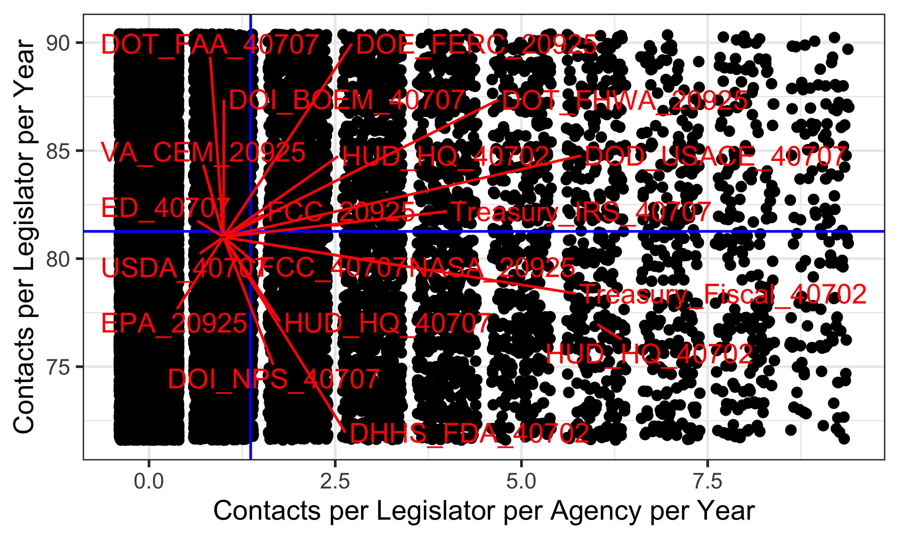
modal %>%
distinct(perAgency, bioname, icpsr_agency, agency_year) %>%
kablebox()| perAgency | bioname | icpsr_agency | agency_year |
|---|---|---|---|
| 1 | TESTER, Jon | DHHS_FDA_40702 | DHHS_FDA_2018 |
| 1 | BARRASSO, John A. | DOD_USACE_40707 | DOD_USACE_2017 |
| 1 | HARPER, Gregg | DOE_FERC_20925 | DOE_FERC_2018 |
| 1 | BARRASSO, John A. | DOI_BOEM_40707 | DOI_BOEM_2017 |
| 1 | BARRASSO, John A. | DOI_NPS_40707 | DOI_NPS_2017 |
| 1 | BARRASSO, John A. | DOT_FAA_40707 | DOT_FAA_2017 |
| 1 | HARPER, Gregg | DOT_FHWA_20925 | DOT_FHWA_2018 |
| 1 | BARRASSO, John A. | ED_40707 | ED_2017 |
| 1 | HARPER, Gregg | EPA_20925 | EPA_2018 |
| 1 | HARPER, Gregg | FCC_20925 | FCC_2018 |
| 1 | BARRASSO, John A. | FCC_40707 | FCC_2017 |
| 1 | TESTER, Jon | HUD_HQ_40702 | HUD_HQ_2018 |
| 1 | BARRASSO, John A. | HUD_HQ_40707 | HUD_HQ_2017 |
| 1 | HARPER, Gregg | NASA_20925 | NASA_2018 |
| 1 | TESTER, Jon | Treasury_Fiscal_40702 | Treasury_Fiscal_2018 |
| 1 | BARRASSO, John A. | Treasury_IRS_40707 | Treasury_IRS_2017 |
| 1 | BARRASSO, John A. | USDA_40707 | USDA_2017 |
| 1 | HARPER, Gregg | VA_CEM_20925 | VA_CEM_2018 |
## other variable means
# dcounts_tenure %>% summarise(across(everything(), mean_or_mode)) %>% kablebox()
# by chair and president's party
values <- tidyr::expand(dcounts_tenure,
agency = "Treasury_IRS",
chair = chair,
ranking_minority = FALSE,
prestige = TRUE,
first = FALSE,
second = FALSE,
third = FALSE,
fourth = FALSE,
fifth = FALSE,
sixth = FALSE,
Legislator_x_Agency = "Treasury_IRS_20947",
Year_x_Agency = "Treasury_IRS_2015",
Legislator = "20947",
Year = "2015",
majority = TRUE,
presidents_party = presidents_party
) %>%
drop_na(majority, chair)
# by year
values_tenure <- tidyr::expand(dcounts_tenure,
agency = "Treasury_IRS",
chair = chair,
ranking_minority = FALSE,
prestige = TRUE,
first = first,
second = second,
third = third,
fourth = fourth,
fifth = fifth,
sixth = sixth,
Legislator_x_Agency = "Treasury_IRS_20947",
Year_x_Agency = "Treasury_IRS_2015",
Legislator = "20947",
Year = "2015",
majority = TRUE,
presidents_party = TRUE
) %>%
drop_na(chair)# helper functions to plot predicted values
ggchair <- function(predicted = predicted) {
predicted$chair %<>% str_replace("0", "Not Chair") %>% str_replace("1", "Chair")
predicted$presidents_party %<>% str_replace("0", "Not President's Party") %>% str_replace("1", "President's Party")
predicted %>%
ggplot() +
aes(x = "",
y = estimate, # predicted,
ymin = conf.low,# predicted - 1.96*std.error,
ymax = conf.high, #predicted + 1.96*std.error,
fill = chair,
shape = chair,
color = chair
) +
geom_pointrange(position = position_dodge(width = -.5) ) +
scale_fill_viridis_d(begin = 0, end = .6, option = "cividis") +
scale_color_viridis_d(begin = 0, end = .6, option = "cividis") +
theme_minimal() +
theme(panel.border = element_blank(),
panel.grid.major.x = element_blank()) + facet_grid(. ~ presidents_party)
}
ggtenure <- function(predicted = predicted) {
predicted %<>%
# drop estimates from impossible values
group_by(rowid,
#predicted, std.error,
estimate, conf.low, conf.high,
chair) %>%
mutate(sum = sum(first, second, third, fourth, fifth, sixth),
more = ifelse(sum == 0, 1,0)) %>%
filter(sum < 2) %>%
pivot_longer(cols = c("first", "second", "third", "fourth", "fifth", "sixth", "more")) %>%
select(name, value) %>%
filter(value == 1) %>%
# clean up for presentation
mutate(year_in_congress = name %>%
str_replace("more", "7\nor more") %>%
str_replace("sixth", "6") %>%
str_replace("fifth", "5") %>%
str_replace("fourth", "4") %>%
str_replace("third", "3") %>%
str_replace("second", "2") %>%
str_replace("first", "1")
) %>%
ungroup()
# Ideally, we could plot against data, but there is so much variation that you can no longer distinguish differences in predicted values
# predicted %<>% full_join(dcounts_tenure2 %>% mutate(predicted = NA))
predicted %<>% filter(chair == 0 | name %in% c("sixth", "more"))
predicted$chair %<>% str_replace("0", "Not Chair") %>% str_replace("1", "Chair")
predicted %>%
ungroup() %>%
ggplot() +
aes(x = year_in_congress,
y = estimate, # predicted,
ymin = conf.low,# predicted - 1.96*std.error,
ymax = conf.high, #predicted + 1.96*std.error,
shape = chair,
color = chair) +
geom_pointrange(position = position_dodge(width = -.3) ) +
scale_fill_viridis_d(begin = 0, end = .6, option = "cividis") +
scale_color_viridis_d(begin = 0, end = .6, option = "cividis") +
theme_minimal() +
theme(panel.border = element_blank(),
panel.grid.major.x = element_blank())
}Clustering standard errors at the legislator level:
Replicated using fixest::feglm here and xtreg in Replication.do. See more about robust (clustered) standard errors with fixed effects are calculated by fixest here and by xtreg here.
# Coef Map
cm = c("chair" = "Committee Chair",
"ranking_minority" = "Ranking Member",
"prestigeR2" = "Prestige Committee (R2)",
"prestigeOLD" = "Prestige Committee (Old)",
"prestige" = "Prestige Committee",
"first" = "First Year",
"second" = "Second Year",
"third" = "Third Year",
"fourth" = "Fourth Year",
"fifth" = "Fifth Year",
"sixth" = "Sixth Year",
"same_party:second_year" = "Second Year x Same Party",
"same_party:third_year" = "Third Year x Same Party",
"same_party:fourth_year" = "Fourth Year x Same Party",
"same_party:fifth_year" = "Fifth Year x Same Party",
"same_party:sixth_year" = "Sixth Year x Same Party",
"second_year" = "Second Year",
"third_year" = "Third Year",
"fourth_year" = "Fourth Year",
"fifth_year" = "Fifth Year",
"sixth_year" = "Sixth Year",
"new_member" = " New Member",
"new_member:same_party" = " New Member x Same Party",
"same_party" = "Same Party",
"majority" = "Majority",
"presidents_party" = "President's Party",
"Legislator" = "Legislator",
"Agency" = "Agency",
"FE: icpsr_agency" = "Legislator × Agency Fixed Effects",
"icpsr_agency" = "Legislator × Agency Fixed Effects",
"FE: District" = "District Fixed Effects",
"FE: Year" = "Year Fixed Effects")
coef_omit = "(Intercept)|majority|presidents_party"
coef_omit = "none"
setFixest_dict(cm)
gof_omit = "R.*|AIC|BIC|Log.*|Std.*"
options(modelsummary_factory_default = 'kableExtra')
config_modelsummary(factory_default = 'kableExtra')
# table formatting to match stata (sort of)
format_table <- . %>%
# OLD modelsummary based on kableExtra package (broken): https://stackoverflow.com/questions/78422275/argument-is-of-length-zero-from-kableextra-after-updating-rstudio
#kableExtra::row_spec(row = 1, bold = T, hline_after = TRUE) %>%
#kableExtra::kable_styling(font_size = 11) %>%
#full_width = TRUE,
#latex_options = c("repeat_header")) %>%
# NEW modelsummary based on tinytable package: https://vincentarelbundock.github.io/tinytable/vignettes/format.html
as.character() %>%
str_replace("Num.Obs.", "Observations") %>%
str_replace("Std.Errors", "\footnotesize Robust/Clustered Std. Errors") %>%
str_replace("FE: Legislator.*x.*Agency", "Legislator x Agency FE") %>%
str_replace("FE: Year.*x.*Agency", "Year x Agency FE") %>%
str_replace("FE: Year", "Year Fixed Effects") %>%
str_replace("FE: Legislator", "Legislator Fixed Effects") %>%
str_replace_all("X|✓", "\\\\\\checkmark") %>%
# a random midrule appeared in the wrong place
#str_remove("\\midrule") %>%
# extract just the table, no caption etc
str_remove_all("\\\\begin\\{table\\}|\\\\centering|\\\\end\\{table\\}")
# for testing table formatting
if(F){
# TeX
modelsummary(models_total, # stars = T,
add_rows = rows,
coef_map = cm,
gof_omit = gof_omit,
coef_omit = coef_omit,
output = "latex",
notes = list("Robust standard errors in parentheses, clustered by legislator.")) |>
tinytable::format_tt(
digits = 2,
fontsize = 11,
num_mark_big = ",") |>
format_table()
}figs/m-total-[1:4].pngtesting = F
# paper table
# 1
# cross-sectional
m_total_cross <-feglm (perYear ~
chair + ranking_minority + prestige +
first + second + third + fourth + fifth + sixth +
majority + presidents_party | Year_x_Agency,
cluster = "Legislator",
data = dcounts_tenure)
if(testing){modelsummary(m_total_cross, gof_omit = "R.*", coef_omit = coef_omit)}
coefplot(m_total_cross, horiz = T, drop = "(Intercept)")
# 2
m_total_dnd <-feglm (perYear ~
chair + ranking_minority + prestige +
first + second + third + fourth + fifth + sixth +
majority + presidents_party | Year_x_Agency + Legislator_x_Agency,
cluster = "Legislator",
# ALT vcov = hetero ~ ssc(cluster.adj = TRUE),
data = dcounts_tenure)
if(testing){modelsummary(m_total_dnd, gof_omit = "R.*", coef_omit = coef_omit)}
coefplot(m_total_dnd, horiz = T)
# 3
m_total_2nd <-feglm (perYear ~
chair + ranking_minority + prestige +
first + second + third + fourth + fifth + sixth +
majority + presidents_party | Year_x_Agency + Legislator_x_Agency,
cluster = "Legislator",
data = dcounts_tenure %>% filter(survive == 1))
if(testing){modelsummary(m_total_2nd, gof_omit = "R.*", coef_omit = coef_omit)}
coefplot(m_total_2nd, horiz = T)
# 4
m_logtotal_dnd <-feglm (log(perYear + 1) ~
chair + ranking_minority + prestige +
first + second + third + fourth + fifth + sixth +
majority + presidents_party | Year_x_Agency + Legislator_x_Agency,
cluster = "Legislator",
data = dcounts_tenure)
if(testing){modelsummary(m_logtotal_dnd, gof_omit = "R.*", coef_omit = coef_omit)}
coefplot(m_logtotal_dnd, horiz = T) 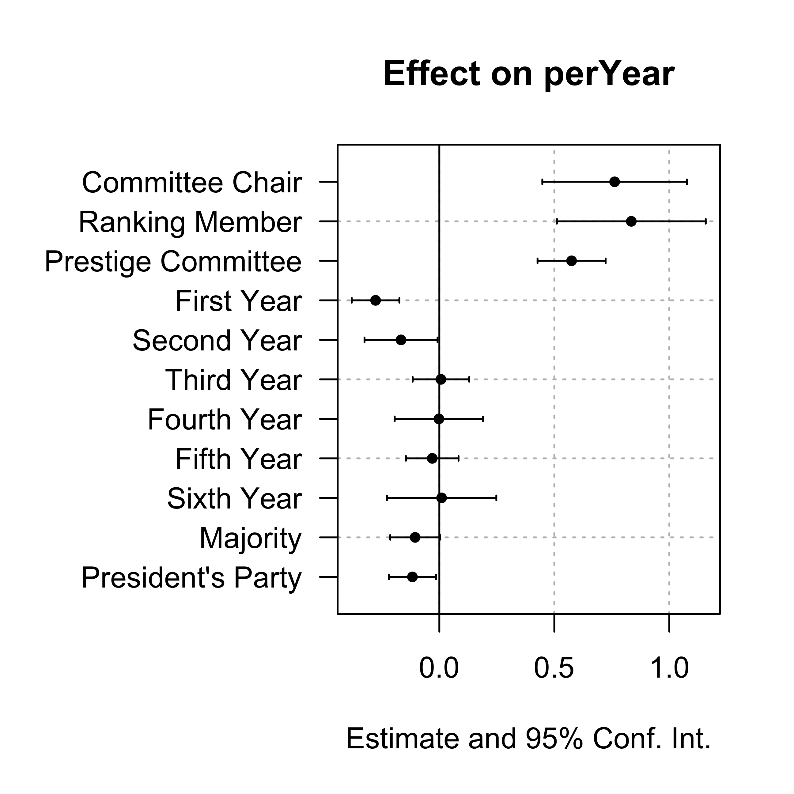
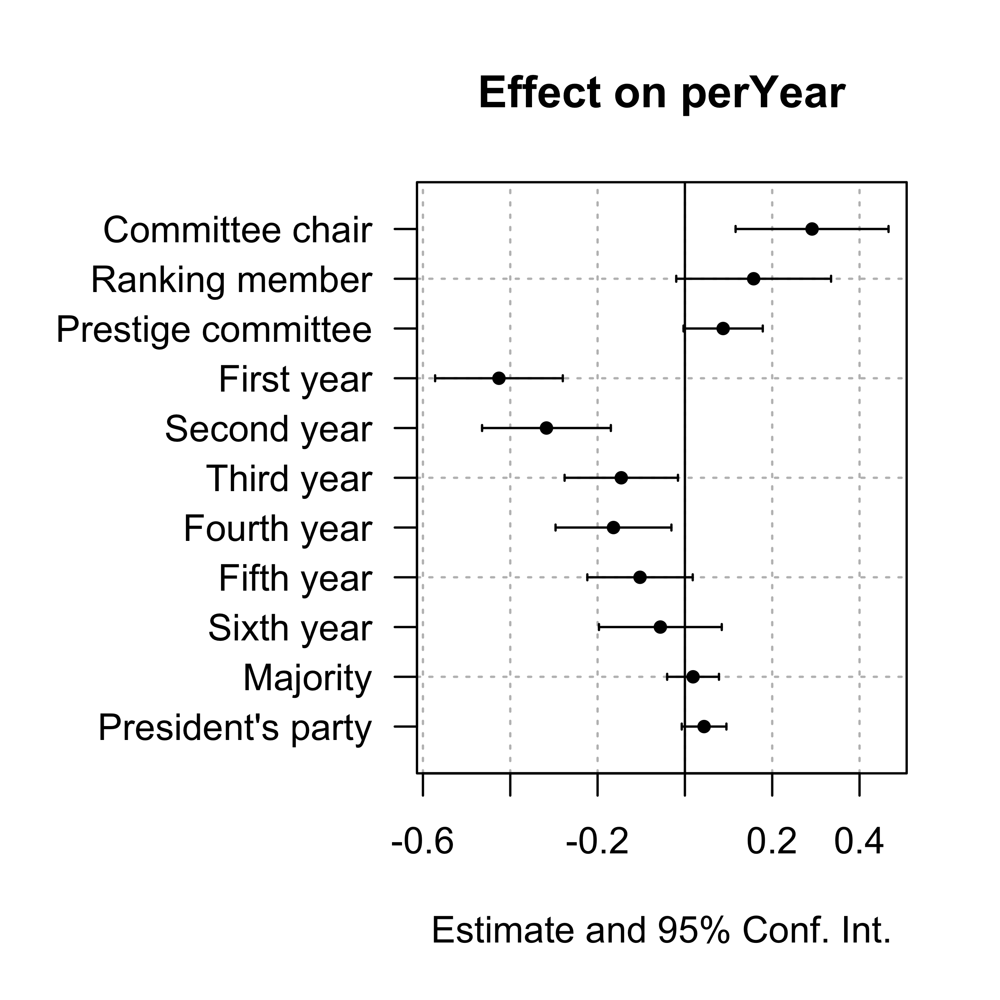

m-total-[1:4].png
tables/models_total.tex (sans stars)models_total <- list(
"(1)" = m_total_cross,
"(2)" = m_total_dnd,
"(3)" = m_total_2nd,
"(4)" = m_logtotal_dnd
)
rows <- tibble(
term = c("Dependent Variable",
"Majority",
"President's Party",
"All Legislators",
"Served At Least 2nd Term"),
`(1)` = c("Count", "✓", "✓", "✓", ""),
`(2)` =c("Count", "✓", "✓", "✓", ""),
`(3)` = c("Count", "✓","✓","", "✓"),
`(4)` = c("Log(Count+1)","✓","✓", "✓", "")
)
rows <- tibble(
term = c("Dependent Variable",
#"Majority",
#"President's Party",
"All Legislators",
"Served At Least 2nd Term"),
`(1)` = c("Count", "✓", ""),
`(2)` =c("Count", "✓", ""),
`(3)` = c("Count","", "✓"),
`(4)` = c("Log(Count+1)", "✓", "")
)
attr(rows, 'position') <- c(0, 20,21,22,23)
attr(rows, 'position') <- c(0, 24,25)
options(modelsummary_factory_default = 'kableExtra')
# HTML
modelsummary(models_total, stars = T,
add_rows = rows,
coef_map = cm,
gof_omit = gof_omit,
coef_omit = coef_omit,
title = "The Effect of Expierence and Institutional Power on Legislator Contacts",
notes = list("Robust standard errors in parentheses, clustered by legislator.")) %>% row_spec(row = 1, bold = T, hline_after = TRUE) | (1) | (2) | (3) | (4) | |
|---|---|---|---|---|
| Dependent Variable | Count | Count | Count | Log(Count+1) |
| Committee Chair | 0.762*** | 0.291** | 0.292** | 0.053*** |
| (0.160) | (0.089) | (0.089) | (0.012) | |
| Ranking Member | 0.835*** | 0.157+ | 0.165+ | 0.035*** |
| (0.165) | (0.090) | (0.091) | (0.010) | |
| Prestige Committee | 0.575*** | 0.088+ | 0.086+ | 0.024** |
| (0.075) | (0.046) | (0.047) | (0.009) | |
| First Year | −0.277*** | −0.426*** | −0.425*** | −0.102*** |
| (0.053) | (0.075) | (0.074) | (0.011) | |
| Second Year | −0.167* | −0.317*** | −0.338*** | −0.040*** |
| (0.081) | (0.075) | (0.074) | (0.011) | |
| Third Year | 0.007 | −0.146* | −0.150* | −0.031*** |
| (0.063) | (0.066) | (0.065) | (0.009) | |
| Fourth Year | −0.002 | −0.164* | −0.197** | −0.017* |
| (0.098) | (0.068) | (0.065) | (0.009) | |
| Fifth Year | −0.031 | −0.103+ | −0.095 | −0.024*** |
| (0.058) | (0.062) | (0.062) | (0.007) | |
| Sixth Year | 0.010 | −0.056 | −0.042 | −0.013+ |
| (0.121) | (0.072) | (0.071) | (0.007) | |
| Majority | −0.105+ | 0.019 | 0.021 | −0.012** |
| (0.055) | (0.030) | (0.030) | (0.004) | |
| President's Party | −0.117* | 0.044+ | 0.046+ | 0.013*** |
| (0.052) | (0.026) | (0.026) | (0.004) | |
| All Legislators | ✓ | ✓ | ✓ | |
| Served At Least 2nd Term | ✓ | |||
| Num.Obs. | 435744 | 435744 | 420270 | 435744 |
| FE: Year_x_Agency | X | X | X | X |
| FE: Legislator_x_Agency | X | X | X | |
| + p |
options(modelsummary_factory_default = 'kableExtra')
options(config_modelsummary(factory_default = 'kableExtra'))
# TeX
modelsummary(models_total, # stars = T,
add_rows = rows,
coef_map = cm,
gof_omit = gof_omit,
coef_omit = coef_omit,
output = "latex",
notes = list("Robust standard errors in parentheses, clustered by legislator.")) |>
format_table() %>%
write_lines(file = here::here("docs", "tables", "models_total.tex") )
beta <- m_total_dnd$coefficients %>%
round(3) %>%
as_tibble(rownames = "beta") %>%
pivot_wider(names_from = beta)
se <- m_total_dnd$se %>%
round(3) %>% as_tibble(rownames = "se") %>%
pivot_wider(names_from = se)To address potential confounding in across-legislator comparisons, the estimates from Model 2 (Column 2 of Table \ref{tab:models_total}) provide the estimated effects from the difference-in-differences specification in Equation \ref{e:diff1}. Across all measures of institutional power, we find that more power increases the number of requests that legislators make. Consider first the effect of being a committee chair. We estimate that becoming a committee chair causes an increase of 0.29 requests \textit{per agency} (95-percent confidence interval [0.12, 0.47]). Across all 92 agencies, this represents an increase of approximately 27 additional requests per year, 21.3\% of the average requests per year in our data. There is a smaller increase for individuals who become ranking members and those who join a Prestige Committee, though the increase is statistically significant for the prestige committee. Becoming a ranking member of a committee causes an increase of 0.16 contacts per agency, while joining a prestige committee causes an 0.29 per agency increase in the number of contacts a member of Congress makes.
We estimate that the experience gained between the first and second year in Congress causes an increase of 0.11 requests \textit{per agency}. The experience gained between the first and seventh year causes an increase of 0.43 per agency. Across all n_agency agencies, this represents an increase of approximately 39 additional requests per year, 31.2\% of the average requests per year in our data. There is a smaller increase after the second year. The experience gained between the second and seventh year causes an increase of 0.32 per agency, an increase of approximately 29 additional requests per year, 23.2\% of the average requests per year in our data.
figs/m-total-predicted-[1:4].pngpredicted <- predictions(m_total_cross,
newdata = values)
# Cross-sectional predictions
predicted %>%
mutate(estimate = estimate*n_agency, #predicted*n_agency,
conf.high = conf.high*n_agency, conf.low = conf.low*n_agency) %>% # std.error = std.error*n_agency) %>%
ggchair() +
labs(title = "Predicted Total Letters per Year\n(Cross-Sectional)",
x = "",
y = "Predicted Total Letters Per Year",
fill = "",
color = "",
shape = "")
# by tenure
predicted <- predictions(m_total_cross,
newdata = values_tenure)
predicted %>%
mutate(estimate = estimate*n_agency, #predicted*n_agency,
conf.high = conf.high*n_agency, conf.low = conf.low*n_agency) %>% # std.error = std.error*n_agency) %>%
ggtenure() +
labs(title = "Predicted Total Letters Per Year\n(Cross-Sectional)",
x = "Years Serving in Congress",
y = "Predicted Letters Per Year",
fill = "",
color = "",
shape = "")
# diff in diff
predicted <- predictions(m_total_dnd,
newdata = values)
# Predictions by chair and president's party
predicted %>%
mutate(estimate = estimate*n_agency, #predicted*n_agency,
conf.high = conf.high*n_agency, conf.low = conf.low*n_agency) %>% # std.error = std.error*n_agency)) %>%
ggchair() +
labs(title = "Predicted Total Letters per Year\nDifference in Differences (Within-Legislator)",
x = "",
y = "Predicted Letters Per Year",
fill = "",
color = "",
shape = "")
# by tenure
predicted <- predictions(m_total_dnd,
newdata = values_tenure)
predicted %>%
mutate(estimate = estimate*n_agency, #predicted*n_agency,
conf.high = conf.high*n_agency, conf.low = conf.low*n_agency) %>% # std.error = std.error*n_agency) %>%
ggtenure() +
geom_line(aes(x = as.numeric(year_in_congress %>% str_sub(1,1)))) +
labs(title = "Predicted Total Letters Per Year\nDifference in Differences (Within-Legislator)",
x = "Years Serving in Congress",
y = "Predicted Letters Per Year",
fill = "",
color = "",
shape = "") 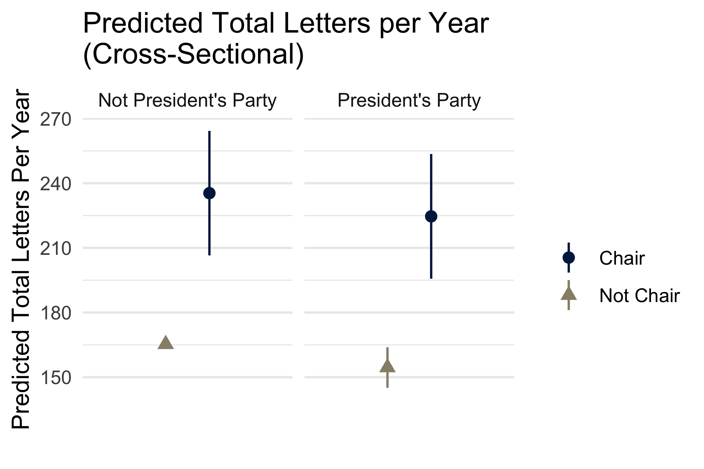
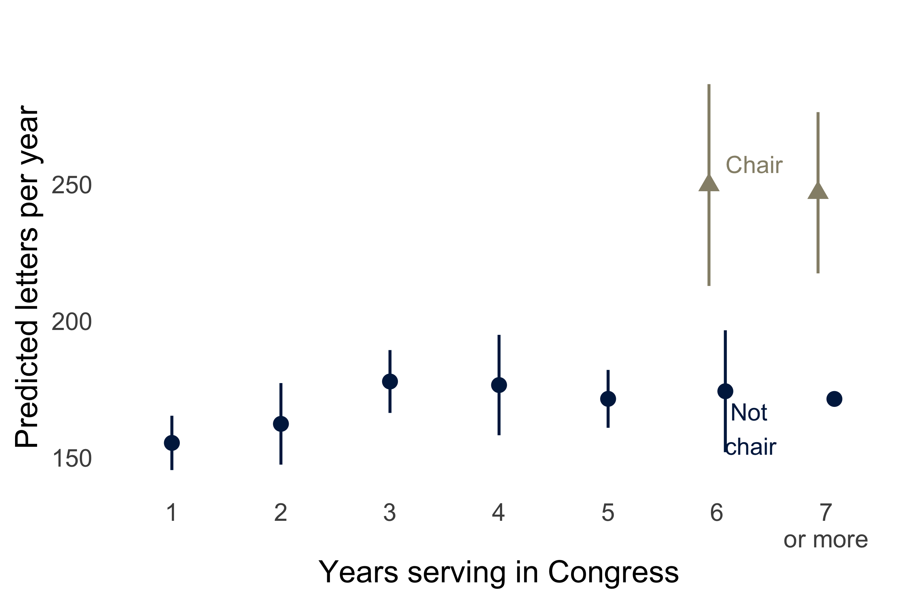
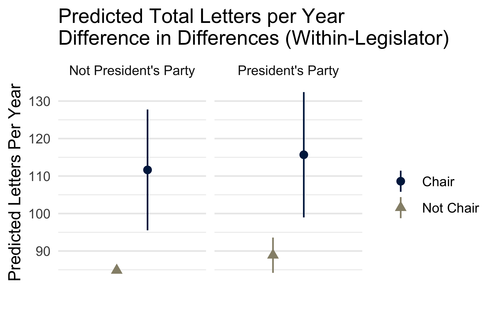
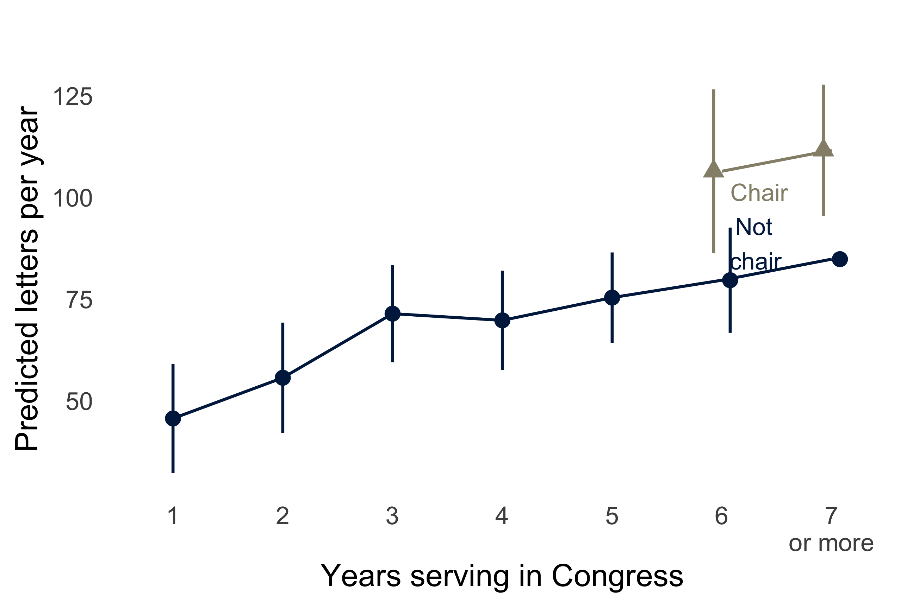
m-total-predicted
DV: Only letters coded as constituency service letters
figs/m-con-[1:4].pngm_con_cross <-feglm (perYear_con ~
chair + ranking_minority + prestige +
first + second + third + fourth + fifth + sixth +
majority + presidents_party | Year_x_Agency,
cluster = "Legislator",
data = dcounts_tenure)
if(testing){modelsummary(m_con_cross, gof_omit = "R.*", coef_omit = coef_omit)}
coefplot(m_con_cross, horiz = T, drop = "(Intercept)")
# 2
m_con_dnd <-feglm (perYear_con ~
chair + ranking_minority + prestige +
first + second + third + fourth + fifth + sixth +
majority + presidents_party | Year_x_Agency + Legislator_x_Agency,
cluster = "Legislator",
data = dcounts_tenure)
if(testing){modelsummary(m_con_dnd, gof_omit = "R.*", coef_omit = coef_omit)}
coefplot(m_con_dnd, horiz = T)
# 3
m_con_2nd <-feglm (perYear_con ~
chair + ranking_minority + prestige +
first + second + third + fourth + fifth + sixth +
majority + presidents_party | Year_x_Agency + Legislator_x_Agency,
cluster = "Legislator",
data = dcounts_tenure %>% filter(survive == 1))
if(testing){modelsummary(m_con_2nd, gof_omit = "R.*", coef_omit = coef_omit)}
coefplot(m_con_2nd, horiz = T)
# 4
m_logcon_dnd <-feglm (log(perYear_con + 1) ~
chair + ranking_minority + prestige +
first + second + third + fourth + fifth + sixth +
majority + presidents_party | Year_x_Agency + Legislator_x_Agency,
cluster = "Legislator",
data = dcounts_tenure)
if(testing){modelsummary(m_logcon_dnd, gof_omit = "R.*", coef_omit = coef_omit)}
coefplot(m_logcon_dnd, horiz = T) 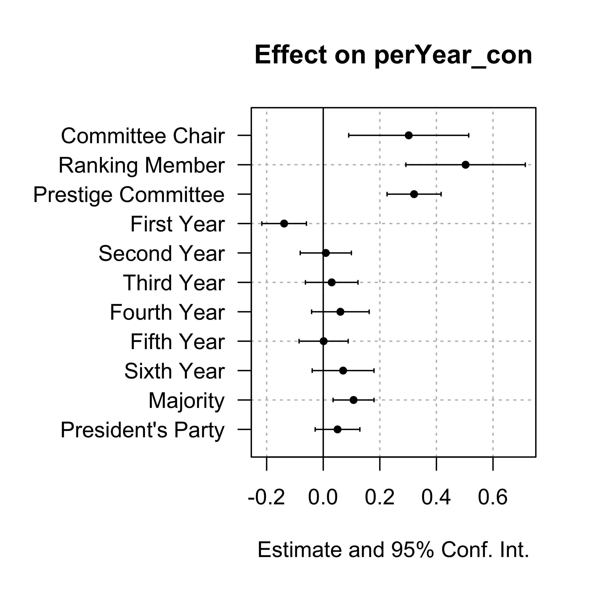
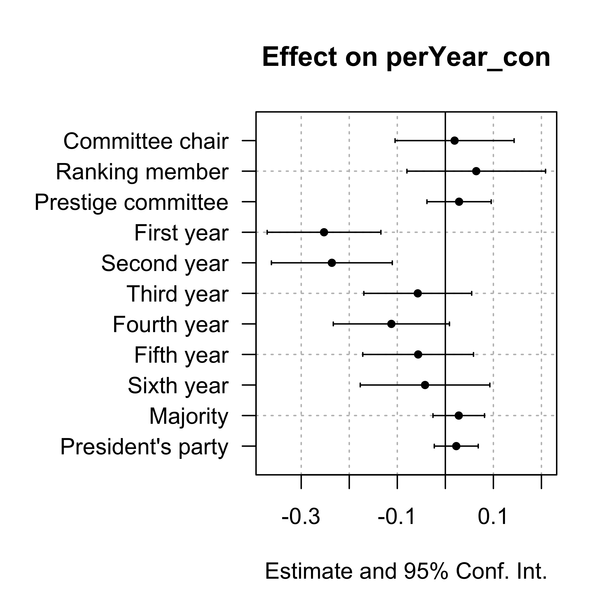
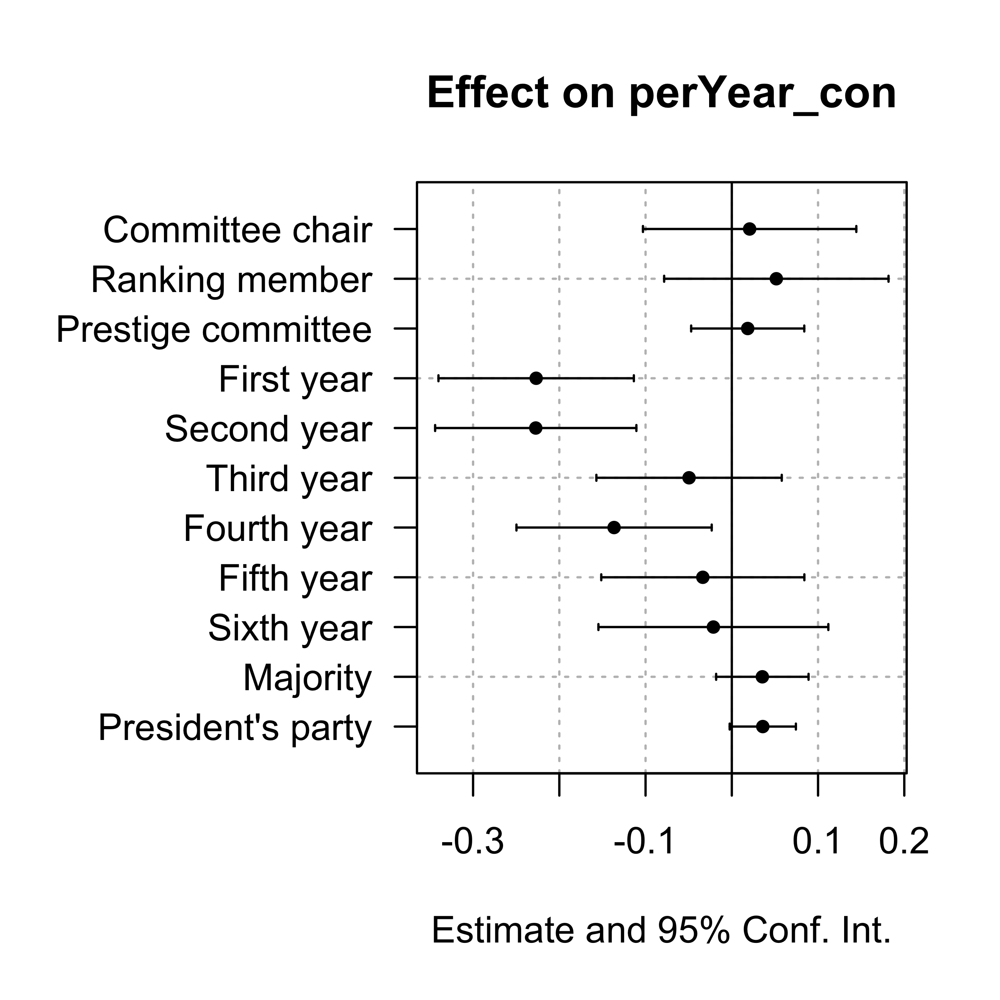
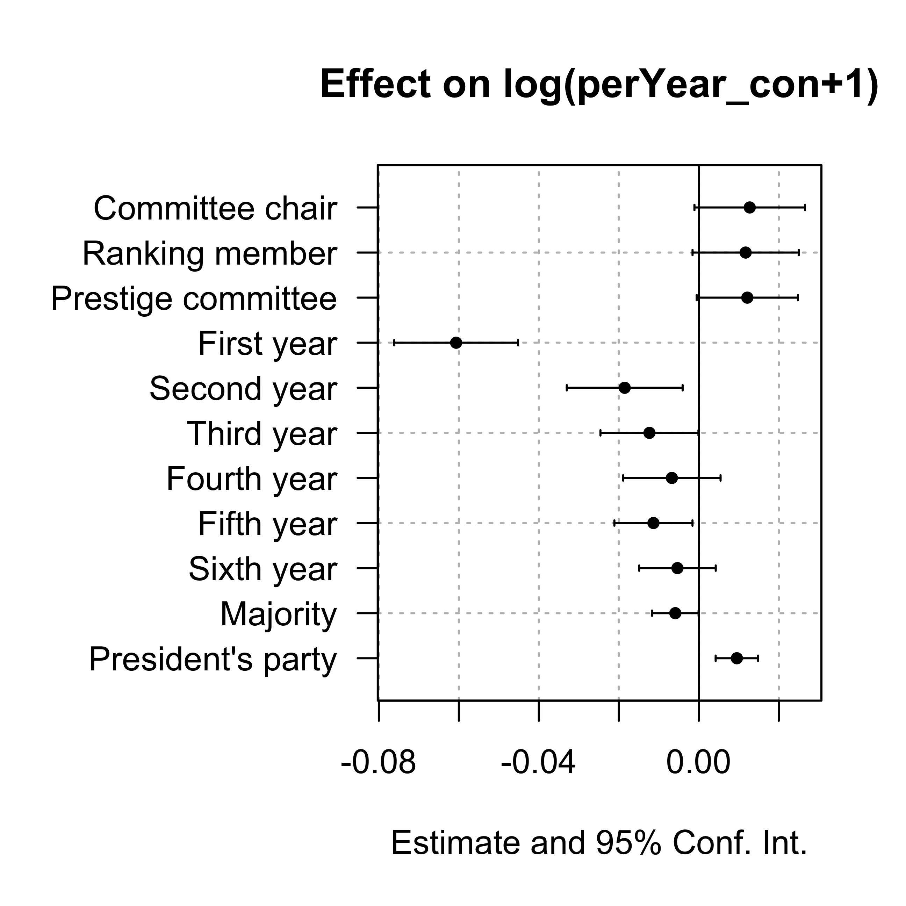
figs/m-con-[1:4].png
tables/models_con.tex (sans stars)models_con <- list(
"(1)" = m_con_cross,
"(2)" = m_con_dnd,
"(3)" = m_con_2nd,
"(4)" = m_logcon_dnd
)
modelsummary(models_con, stars = T,
add_rows = rows,
coef_map = cm,
gof_omit = gof_omit,
coef_omit = coef_omit) %>%
row_spec(row = 1, bold = T, hline_after = TRUE) | (1) | (2) | (3) | (4) | |
|---|---|---|---|---|
| Dependent Variable | Count | Count | Count | Log(Count+1) |
| Committee Chair | 0.346** | 0.036 | 0.037 | 0.013+ |
| (0.120) | (0.062) | (0.062) | (0.007) | |
| Ranking Member | 0.508*** | 0.056 | 0.064 | 0.012+ |
| (0.124) | (0.062) | (0.062) | (0.007) | |
| Prestige Committee | 0.413*** | 0.026 | 0.025 | 0.012+ |
| (0.058) | (0.032) | (0.032) | (0.006) | |
| First Year | −0.120** | −0.208*** | −0.207*** | −0.061*** |
| (0.041) | (0.056) | (0.055) | (0.008) | |
| Second Year | −0.095 | −0.186** | −0.205*** | −0.019* |
| (0.071) | (0.058) | (0.056) | (0.007) | |
| Third Year | 0.080+ | −0.038 | −0.039 | −0.012* |
| (0.048) | (0.055) | (0.053) | (0.006) | |
| Fourth Year | 0.032 | −0.094+ | −0.122* | −0.007 |
| (0.087) | (0.057) | (0.054) | (0.006) | |
| Fifth Year | 0.019 | −0.041 | −0.028 | −0.011* |
| (0.045) | (0.057) | (0.058) | (0.005) | |
| Sixth Year | 0.028 | −0.028 | −0.019 | −0.005 |
| (0.111) | (0.065) | (0.064) | (0.005) | |
| Majority | −0.114* | 0.028 | 0.031 | −0.006* |
| (0.047) | (0.025) | (0.026) | (0.003) | |
| President's Party | −0.168*** | 0.032+ | 0.033+ | 0.010*** |
| (0.043) | (0.018) | (0.018) | (0.003) | |
| All Legislators | ✓ | ✓ | ✓ | |
| Served At Least 2nd Term | ✓ | |||
| Num.Obs. | 435744 | 435744 | 420270 | 435744 |
| FE: Year_x_Agency | X | X | X | X |
| FE: Legislator_x_Agency | X | X | X | |
| + p |
modelsummary(models_con, # stars = T,
add_rows = rows,
coef_map = cm,
gof_omit = gof_omit,
coef_omit = coef_omit,
output = "latex",
notes = list(" Robust standard errors in parentheses, clustered by legislator."))%>%
format_table() %>%
write_lines(file = here::here("docs", "tables", "models_con.tex") )
beta <- m_con_dnd$coefficients %>%round(3) %>% as_tibble(rownames = "beta") %>% pivot_wider(names_from = beta)
se <- m_con_dnd$se %>%round(3) %>% as_tibble(rownames = "se") %>% pivot_wider(names_from = se)Table \ref{tab:models_con} is identical to Table\ref{tab:models_total} except that we subset the data to only legislator requests hand-coded as constituency service. Column 2 of Table \ref{tab:models_con} provides the estimated effects from the difference-in-differences specification in Equation \ref{e:diff1}. More experience increases the level of constituency service that legislators provide. The effect of being a committee chair is positive but not significant at the .05 level. We estimate that the experience gained between the first and second year in Congress causes an increase of 0.02 requests \textit{per agency}. The experience gained between the first and seventh year causes an increase of 0.21 per agency. Across all 92 agencies, this represents an increase of approximately 19 additional requests per year, 21.9\% of the average requests per year in our data. There is a smaller increase after the second year. The experience gained between the second and seventh year causes an increase of 0.19 per agency, an increase of approximately 17 additional requests per year, 19.6\% of the average requests per year in our data.
figs/m-con-predicted-[1:4].png# Cross-sectional predictions:
predicted <- predictions(m_con_cross,
newdata = values)
# A plot by chair & presidents' party
predicted %>%
mutate(estimate = estimate*n_agency, #predicted*n_agency,
conf.high = conf.high*n_agency, conf.low = conf.low*n_agency) %>% # std.error = std.error*n_agency)) %>%
ggchair() +
labs(title = "Predicted Constituency Service Letters per Year\n(Cross-Sectional)",
x = "",
y = "Predicted Letters Per Year",
fill = "",
color = "",
shape = "")
# by tenure
predicted <- predictions(m_con_cross,
newdata = values_tenure)
predicted %>%
mutate(estimate = estimate*n_agency, #predicted*n_agency,
conf.high = conf.high*n_agency, conf.low = conf.low*n_agency) %>% # std.error = std.error*n_agency) %>%
ggtenure() +
geom_line(aes(x = as.numeric(year_in_congress %>% str_sub(1,1)))) +
labs(title = "Predicted Constituency Service Letters Per Year\n(Cross Sectional)",
x = "Years Serving in Congress",
y = "Predicted Letters Per Year",
fill = "",
color = "",
shape = "")
# Diff in diff predictions
predicted <- predictions(m_con_dnd,
newdata = values)
# diff in diff plot
predicted %>%
mutate(estimate = estimate*n_agency, #predicted*n_agency,
conf.high = conf.high*n_agency, conf.low = conf.low*n_agency) %>% # std.error = std.error*n_agency)) %>%
ggchair() +
labs(title = "Predicted Constituency Service Letters per Year\nDifference in Differences (Within-Legislator)",
x = "",
y = "Predicted Letters Per Year",
fill = "",
color = "",
shape = "")
# by tenure
predicted <- predictions(m_con_dnd,
newdata = values_tenure)
predicted %>%
mutate(estimate = estimate*n_agency, #predicted*n_agency,
conf.high = conf.high*n_agency, conf.low = conf.low*n_agency) %>% # std.error = std.error*n_agency) %>%
ggtenure() +
geom_line(aes(x = as.numeric(year_in_congress %>% str_sub(1,1)))) +
labs(title = "Predicted Constituency Service Letters Per Year\nDifference in Differences (Within-Legislator)",
x = "Years Serving in Congress",
y = "Predicted Letters Per Year",
fill = "",
color = "",
shape = "") 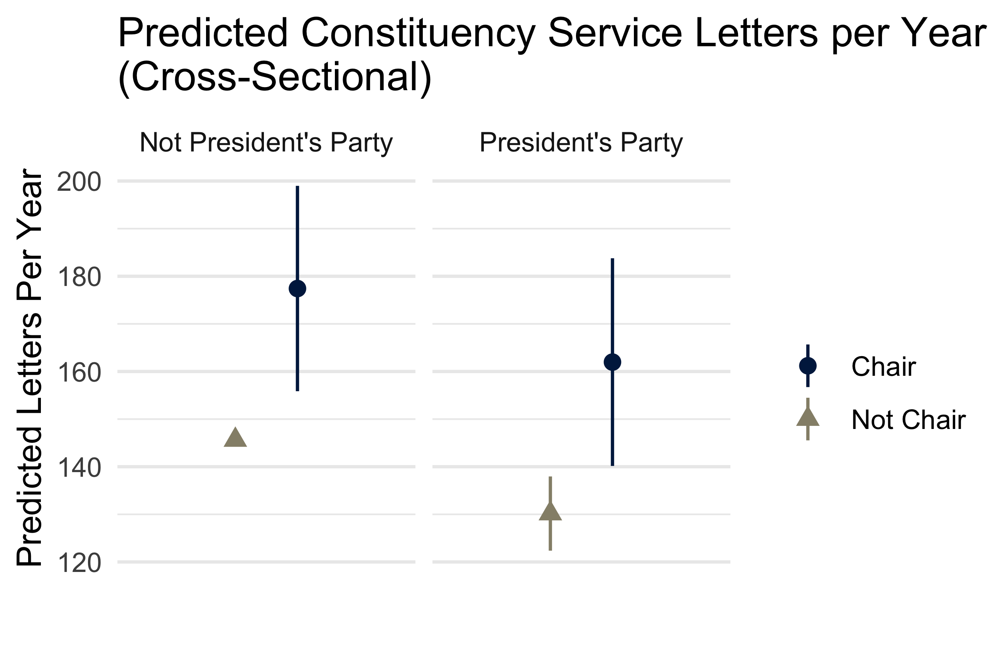
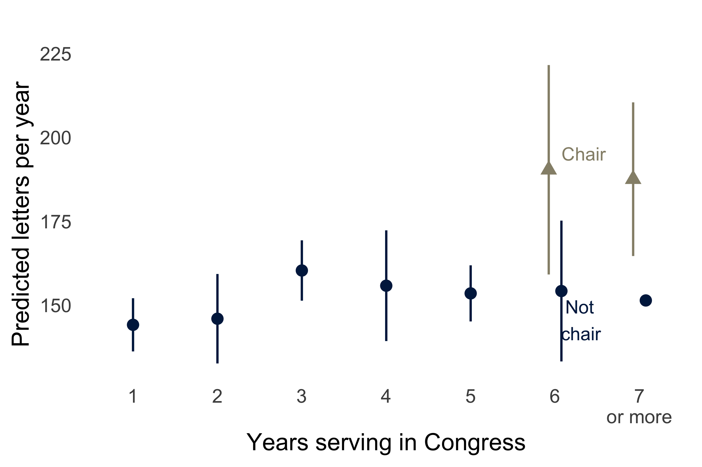
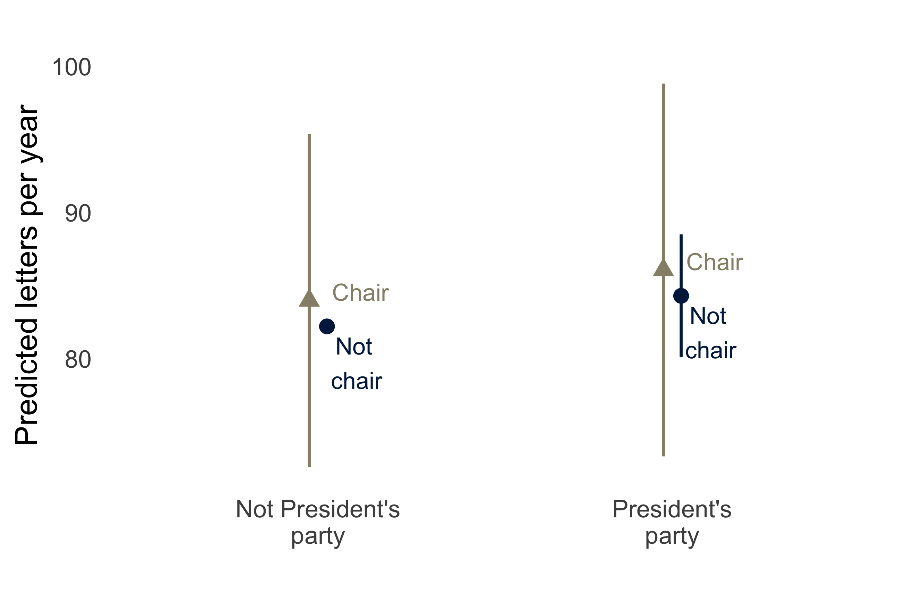
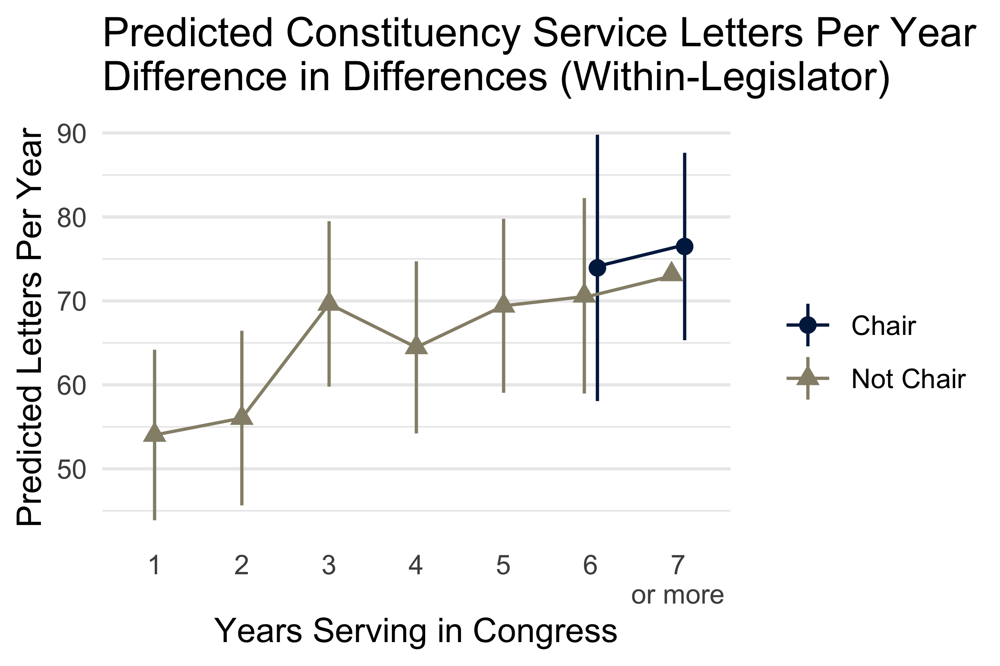
m-con-predicted
Only using letters coded as constituent letters
figs/m-policy-[1:4].pngm_policy_cross <-feglm (perYear_policy ~
chair + ranking_minority + prestige +
first + second + third + fourth + fifth + sixth +
majority + presidents_party | Year_x_Agency,
cluster = "Legislator",
data = dcounts_tenure)
if(testing){modelsummary(m_policy_cross, gof_omit = "R.*", coef_omit = coef_omit)}
coefplot(m_policy_cross, horiz = T, drop = "(Intercept)")
# 2
m_policy_dnd <-feglm (perYear_policy ~
chair + ranking_minority + prestige +
first + second + third + fourth + fifth + sixth +
majority + presidents_party | Year_x_Agency + Legislator_x_Agency,
cluster = "Legislator",
data = dcounts_tenure)
if(testing){modelsummary(m_policy_dnd, gof_omit = "R.*", coef_omit = coef_omit)}
coefplot(m_policy_dnd, horiz = T)
# 3
m_policy_2nd <-feglm (perYear_policy ~
chair + ranking_minority + prestige +
first + second + third + fourth + fifth + sixth +
majority + presidents_party | Year_x_Agency + Legislator_x_Agency,
cluster = "Legislator",
data = dcounts_tenure %>% filter(survive == 1))
if(testing){modelsummary(m_tenure_2nd, gof_omit = "R.*", coef_omit = coef_omit)}
coefplot(m_policy_2nd, horiz = T)
# 4
m_logcon_dnd <-feglm (log(perYear_policy + 1) ~
chair + ranking_minority + prestige +
first + second + third + fourth + fifth + sixth +
majority + presidents_party | Year_x_Agency + Legislator_x_Agency,
cluster = "Legislator",
data = dcounts_tenure)
if(testing){modelsummary(m_logcon_dnd, gof_omit = "R.*", coef_omit = coef_omit)}
coefplot(m_logcon_dnd, horiz = T) 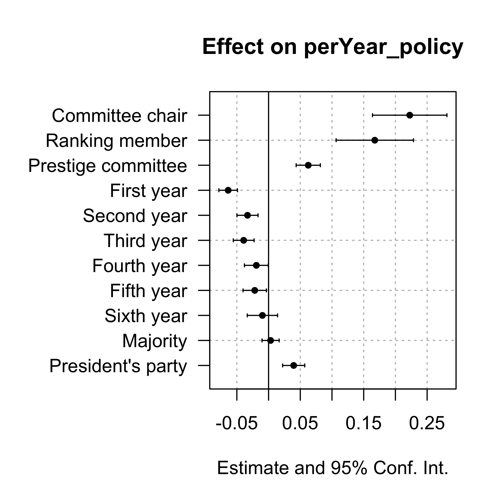

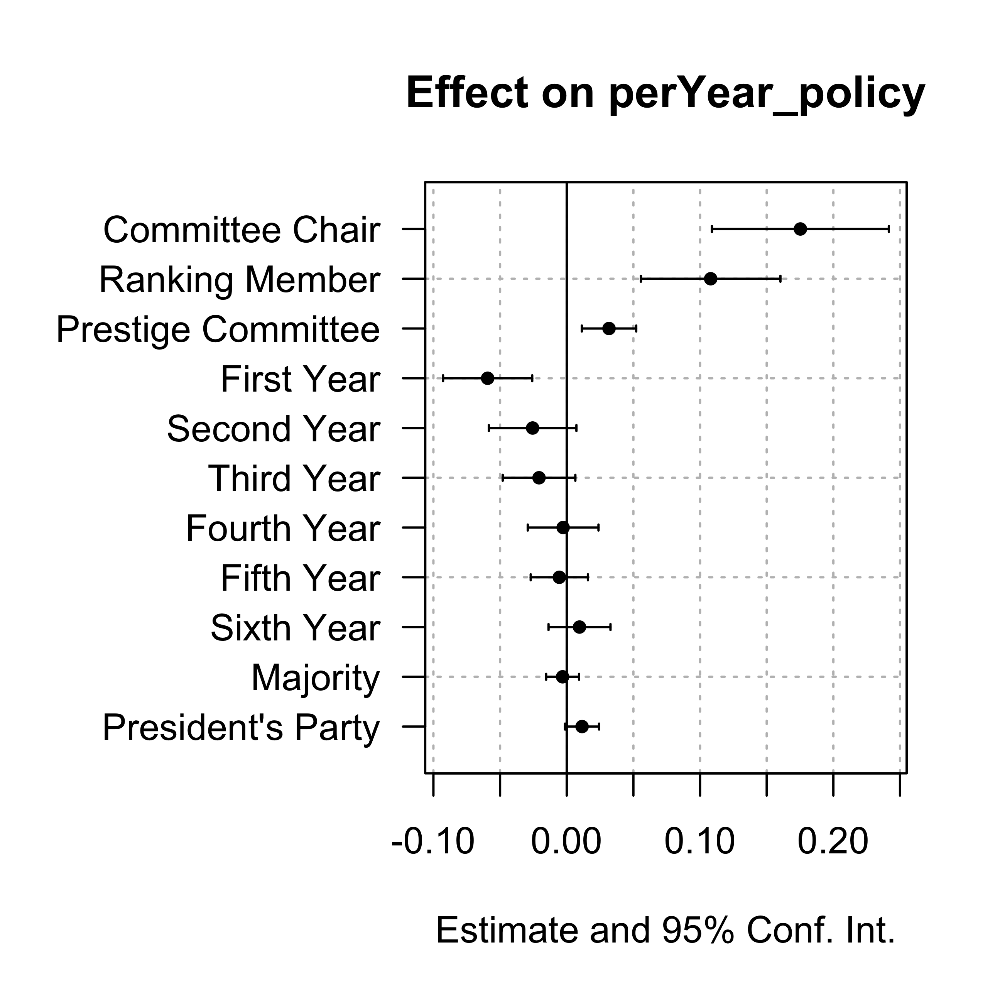

figs/m-policy-[1:4].png
tables/models_policy.tex (sans stars)models_policy <- list(
"(1)" = m_policy_cross,
"(2)" = m_policy_dnd,
"(3)" = m_policy_2nd,
"(4)" = m_logcon_dnd
)
modelsummary(models_policy, stars = T,
add_rows = rows,
coef_map = cm,
gof_omit = gof_omit,
coef_omit = coef_omit,
notes = list("Robust standard errors in parentheses, clustered by legislator." )) %>%
row_spec(row = 1, bold = T, hline_after = TRUE) | (1) | (2) | (3) | (4) | |
|---|---|---|---|---|
| Dependent Variable | Count | Count | Count | Log(Count+1) |
| Committee Chair | 0.211*** | 0.174*** | 0.175*** | 0.041*** |
| (0.029) | (0.034) | (0.034) | (0.007) | |
| Ranking Member | 0.156*** | 0.107*** | 0.108*** | 0.028*** |
| (0.030) | (0.027) | (0.027) | (0.006) | |
| Prestige Committee | 0.053*** | 0.031** | 0.032** | 0.010** |
| (0.010) | (0.010) | (0.010) | (0.003) | |
| First Year | −0.081*** | −0.060*** | −0.059*** | −0.027*** |
| (0.007) | (0.017) | (0.017) | (0.005) | |
| Second Year | −0.050*** | −0.029+ | −0.026 | −0.015** |
| (0.008) | (0.017) | (0.017) | (0.005) | |
| Third Year | −0.046*** | −0.019 | −0.021 | −0.011** |
| (0.008) | (0.014) | (0.014) | (0.004) | |
| Fourth Year | −0.026** | −0.001 | −0.003 | −0.004 |
| (0.009) | (0.014) | (0.014) | (0.004) | |
| Fifth Year | −0.028** | −0.004 | −0.006 | −0.005+ |
| (0.009) | (0.011) | (0.011) | (0.003) | |
| Sixth Year | −0.013 | 0.009 | 0.010 | −0.004 |
| (0.012) | (0.012) | (0.012) | (0.003) | |
| Majority | 0.002 | −0.003 | −0.003 | −0.002 |
| (0.006) | (0.006) | (0.006) | (0.002) | |
| President's Party | 0.036*** | 0.012+ | 0.012+ | 0.005*** |
| (0.008) | (0.006) | (0.006) | (0.002) | |
| All Legislators | ✓ | ✓ | ✓ | |
| Served At Least 2nd Term | ✓ | |||
| Num.Obs. | 435744 | 435744 | 420270 | 435744 |
| FE: Year_x_Agency | X | X | X | X |
| FE: Legislator_x_Agency | X | X | X | |
| + p |
modelsummary(models_policy, # stars = T,
add_rows = rows,
coef_map = cm,
gof_omit = gof_omit,
coef_omit = coef_omit,
output = "latex",
notes = list(" Robust standard errors in parentheses, clustered by legislator." )) %>%
format_table() %>%
write_lines(file = here::here("docs", "tables", "models_policy.tex") )figs/m-policy-predicted-[1:4].pngpredicted <- predictions(m_policy_cross,
newdata = values)
# Cross-sectional predictions
predicted %>%
mutate(estimate = estimate*n_agency, #predicted*n_agency,
conf.high = conf.high*n_agency, conf.low = conf.low*n_agency) %>% # std.error = std.error*n_agency)) %>%
ggchair() +
labs(title = "Predicted Policy Letters per Year\n(Cross-Sectional)",
x = "",
y = "Predicted Letters Per Year",
fill = "",
color = "",
shape = "")
# by tenure
predicted <- predictions(m_policy_cross,
newdata = values_tenure)
predicted %>%
mutate(estimate = estimate*n_agency, #predicted*n_agency,
conf.high = conf.high*n_agency, conf.low = conf.low*n_agency) %>% # std.error = std.error*n_agency) %>%
ggtenure() +
geom_line(aes(x = as.numeric(year_in_congress %>% str_sub(1,1)))) +
labs(title = "Predicted Policy Letters Per Year\n(Cross Sectional)",
x = "Years Serving in Congress",
y = "Predicted Letters Per Year",
fill = "",
color = "",
shape = "")
# Predictions for diff in diff plot
predicted <- predictions(m_policy_dnd,
newdata = values)
# diff in diff plot
predicted %>%
mutate(estimate = estimate*n_agency, #predicted*n_agency,
conf.high = conf.high*n_agency, conf.low = conf.low*n_agency) %>% # std.error = std.error*n_agency)) %>%
ggchair() +
labs(title = "Predicted Policy Letters per Year\nDifference in Differences (Within-Legislator)",
x = "",
y = "Predicted Letters Per Year",
fill = "",
color = "",
shape = "")
# by tenure
predicted <- predictions(m_policy_dnd,
newdata = values_tenure)
predicted %>%
mutate(estimate = estimate*n_agency, #predicted*n_agency,
conf.high = conf.high*n_agency, conf.low = conf.low*n_agency) %>% # std.error = std.error*n_agency) %>%
ggtenure() +
geom_line(aes(x = as.numeric(year_in_congress %>% str_sub(1,1)))) +
labs(title = "Predicted Policy Letters Per Year\nDifference in Differences (Within-Legislator)",
x = "Years Serving in Congress",
y = "Predicted Letters Per Year",
fill = "",
color = "",
shape = "")
beta <- m_policy_dnd$coefficients %>%round(3) %>% as_tibble(rownames = "beta") %>% pivot_wider(names_from = beta)
se <- m_policy_dnd$se %>%round(3) %>% as_tibble(rownames = "se") %>% pivot_wider(names_from = se)
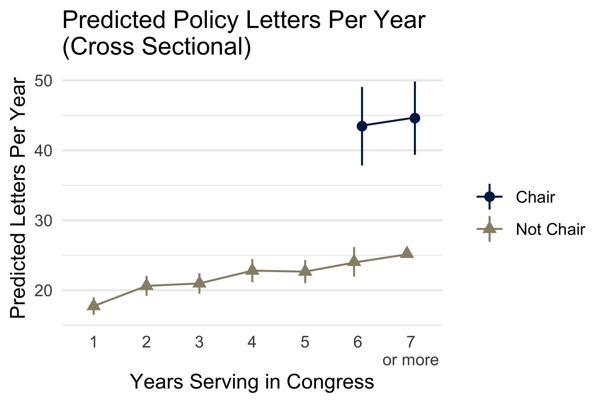
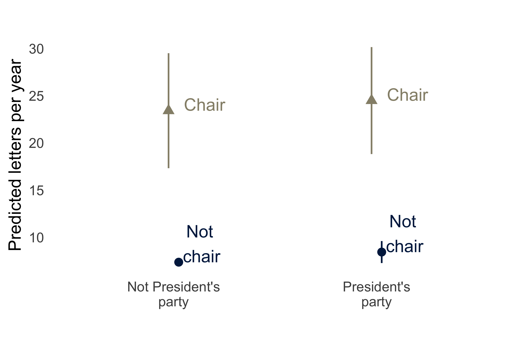
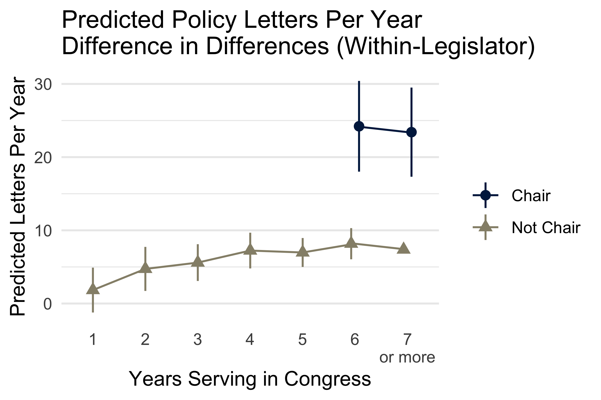
m-policy-predicted
Table \ref{tab:models_policy} is identical to Table \ref{tab:models_total} except that we subset the data to only legislator requests hand-coded as policy work. Column 2 of Table \ref{tab:models_policy} provides the estimated effects from the difference-in-differences specification in Equation \ref{e:diff1}. Across all measures of institutional power, we find that more power increases the level of policy work that legislators provide. Consider first the effect of being a committee chair. We estimate that becoming a committee chair causes an increase of 0.17 policy requests \textit{per agency} (95-percent confidence interval [0.11, 0.24]). Across all 92 agencies, this represents an increase of approximately 16 additional requests per year, 96.8\% of the average requests per year in our data. There is a smaller increase for individuals who become ranking members and those who join a Prestige Committee, though the increase is statistically significant for the prestige committee. Becoming a ranking member of a committee causes an increase of 0.11 contacts per agency, while joining a prestige committee causes a 0.17 per agency increase in the policy requests a member of Congress makes.
figs/m-ratio-[1:2].pngdcounts_ratio %<>%
mutate(Legislator = icpsr,
Year = year) %>%
filter(year >2006 & year < 2019)
m_ratio_cross <- feglm(ratio ~
chair + ranking_minority + prestige + majority + presidents_party +
first + second + third + fourth + fifth + sixth | Year,
cluster = "Legislator",
data = dcounts_ratio)
if(testing){modelsummary(m_ratio_cross, gof_omit = "R.*", coef_omit = coef_omit)}
coefplot(m_ratio_cross, horiz = T, drop = "(Intercept)")
# Diff in diff
m_ratio_dnd <- feglm(ratio ~
chair + ranking_minority + prestige + majority + presidents_party +
first + second + third + fourth + fifth + sixth |
Legislator + Year,
cluster = "Legislator",
data = dcounts_ratio)
if(testing){modelsummary(m_ratio_dnd, gof_omit = "R.*", coef_omit = coef_omit)}
coefplot(m_ratio_dnd, horiz = T) 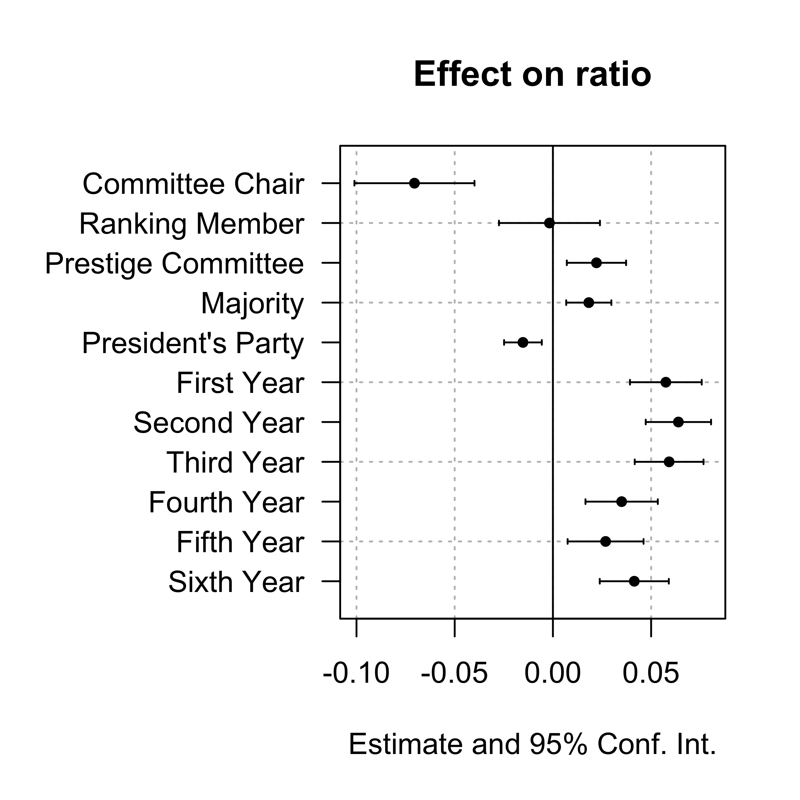
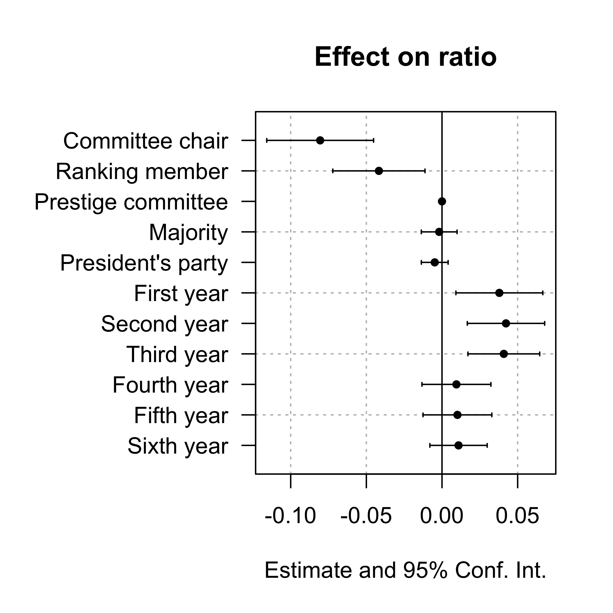
figs/m-ratio-[1:4].png
tables/models_ratio.tex (sans stars)models_ratio <- list(
"(1)" = m_ratio_cross,
"(2)" = m_ratio_dnd
)
rows <- tibble(
term = c("Dependent Variable",
"Majority",
"President's Party"),
`(1)` = c("Ratio",
"✓",
"✓"),
`(2)` =c("Ratio",
"✓",
"✓")
)
# all coef
rows <- tibble(
term = c("Dependent Variable"),
`(1)` = c("Ratio"),
`(2)` =c("Ratio")
)
# Checkmarks for controls
attr(rows, 'position') <- c(0, 20,21)
# all coef
attr(rows, 'position') <- c(0)
modelsummary(models_ratio, stars = T,
add_rows = rows,
coef_map = cm,
gof_omit = gof_omit,
coef_omit = coef_omit,
notes = list("Robust standard errors in parentheses, clustered by legislator.") ) %>% row_spec(row = 1, bold = T, hline_after = TRUE) | (1) | (2) | |
|---|---|---|
| Dependent Variable | Ratio | Ratio |
| Committee Chair | −0.055*** | −0.070*** |
| (0.016) | (0.019) | |
| Ranking Member | 0.001 | −0.030+ |
| (0.015) | (0.017) | |
| Prestige Committee | 0.016 | −0.009 |
| (0.011) | (0.009) | |
| First Year | 0.059*** | 0.036* |
| (0.011) | (0.016) | |
| Second Year | 0.060*** | 0.038* |
| (0.011) | (0.015) | |
| Third Year | 0.063*** | 0.037** |
| (0.011) | (0.013) | |
| Fourth Year | 0.037** | 0.011 |
| (0.011) | (0.013) | |
| Fifth Year | 0.036** | 0.012 |
| (0.012) | (0.013) | |
| Sixth Year | 0.040*** | 0.017 |
| (0.010) | (0.010) | |
| Majority | 0.012+ | −0.003 |
| (0.007) | (0.007) | |
| President's Party | −0.029*** | −0.006 |
| (0.007) | (0.005) | |
| Num.Obs. | 26134 | 26134 |
| FE: Year | X | X |
| FE: Legislator | X | |
| + p |
modelsummary(models_ratio, # stars = T,
add_rows = rows,
coef_map = cm,
gof_omit = gof_omit,
coef_omit = coef_omit,
output = "latex",
notes = list(" Robust standard errors in parentheses, clustered by legislator.") ) %>%
# format to match stata output (sort of)
format_table() %>%
write_lines(file = here::here("docs", "tables", "models_ratio.tex") )
beta <- m_ratio_dnd$coefficients %>%round(3) %>% as_tibble(rownames = "beta") %>% pivot_wider(names_from = beta)
se <- m_ratio_dnd$se %>%round(3) %>% as_tibble(rownames = "se") %>% pivot_wider(names_from = se)Column 2 of Table \ref{tab:models_ratio} provides the estimated effects from the difference-in-differences specification. We estimate that becoming a committee chair causes the ratio of constituency service to policy work to decrease by 0.07 (95-percent confidence interval [-0.03, -0.11 ]). Becoming a ranking member of a committee causes a decrease of 0.03 in the ratio.
figs/m-ratio-predicted-[1:4].pngpredicted <- predictions(m_ratio_cross,
newdata = values)
# Cross-sectional predictions
predicted %>%
ggchair() +
labs(title = "Predicted Ratio of Constituent to Policy Work\n(Cross-Sectional)",
x = "",
y = "Predicted Ratio of\nConstituent to Policy Work",
fill = "",
color = "",
shape = "")
# by tenure
predicted <- predictions(m_ratio_cross,
newdata = values_tenure)
predicted %>%
ggtenure() +
labs(title = "Predicted Ratio of Constituent to Policy Work\n(Cross-Sectional)",
x = "Years Serving in Congress",
y = "Predicted Ratio of\nConstituent to Policy Work",
fill = "",
color = "",
shape = "")
# Predictions for diff in diff plot
predicted <- predictions(m_ratio_dnd,
newdata = values)
# diff in diff plot
predicted %>%
ggchair() +
labs(title = "Predicted Ratio of Constituent to Policy Work\nDifference in Differences (Within-Legislator)",
x = "",
y = "Predicted Ratio of\nConstituent to Policy Work",
fill = "",
color = "",
shape = "")
# by tenure
predicted <- predictions(m_ratio_dnd,
newdata = values_tenure)
predicted %>%
ggtenure() +
geom_line(aes(x = as.numeric(year_in_congress %>% str_sub(1,1)))) +
labs(title = "Predicted Ratio of Constituent to Policy Work\nDifference in Differences (Within-Legislator)",
x = "Years Serving in Congress",
y = "Predicted Ratio of\nConstituent to Policy Work",
fill = "",
color = "",
shape = "")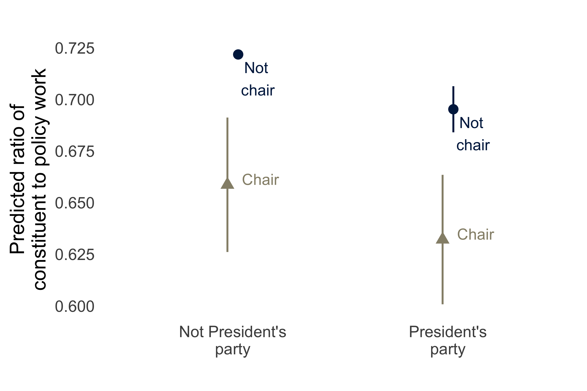
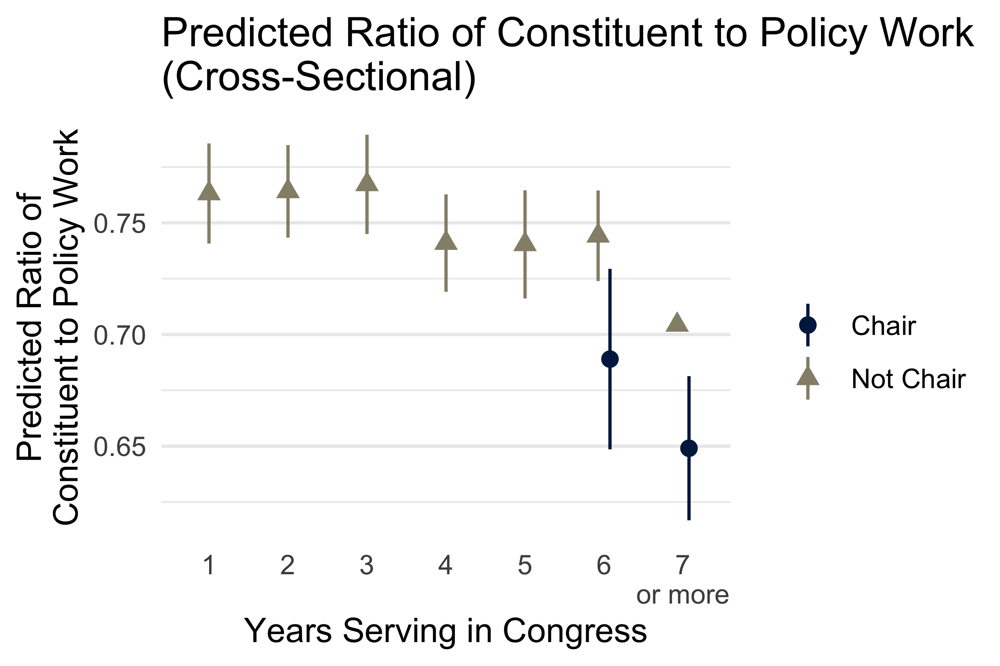
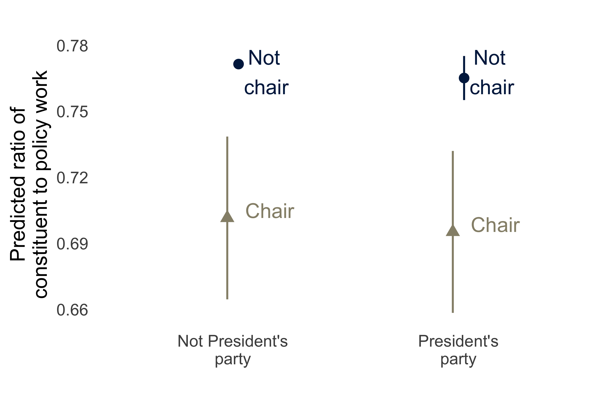
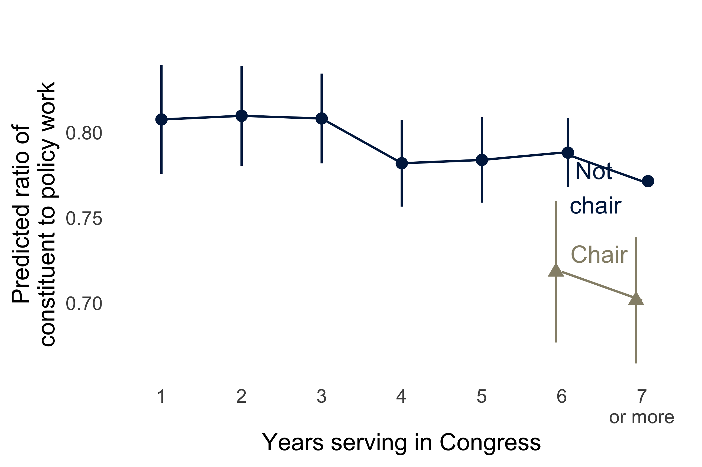
m-ratio-predicted
#TODO deal with chamber switchers ? or maybe we don't need to since everything is calculated grouped at chamber level?
# count(members, bioname, icpsr, congress, sort = T) |> filter(n >1)The main district-level models in the paper focus on estimating the effect of legislator experience by leveraging turnover within districts. We compare the service that a district receives before and after electing a new legislator and in the following years as legislators gain experience in office.
Same party lookup tableAs a robustness check, we replicate our within-district results using a subset of district-year-count observations where turnover in a district allows us to assess the partisanship of the prior member holding that seat. We interact an indicator of whether the prior member was of the same party with all other indicators (i.e., whether the member is new, serving in years 1-6, or serving longer than 6 years). We compare the service that a district receives before and after electing a new legislator and in the following years, accounting for whether that member is of the same party. However, a structural constraint of the data means that this robustness check is limited to observations where turnover within a redistricting cycle gives us a measure of whether the legislator replaced a member of the same party or of another party.
The table below accounts for redistricting by treating post-redistricting districts as new entities, not the same district as the one with the same number prior to redistricting (i.e., we do NOT count cases where a district elects someone of the same or different party as the district with the same number had before redistricting). Since some states completely re-number their districts, there is no way to be sure that a new District 4 has any relationship to the District 4 under the previous redistricting map (though it often may have significant overlap) without creating some spatial measure of the percent of shared census tracts, or something like that, which we do not attempt.
Many NAs exist for the same party variable because we only observe it when there is turnover within a redistricting cycle. Seats that do not turn over for an entire cycle (e.g., 2002-2012) are FALSE (“0”) for “new member” and have no value for “same party.” Other districts are NA until there is turnover. Thus, adding “same party” causes significant data loss due to NAs.
same_party in the models below.To measure turnover in the Senate where “districts” have two members, we code same party as FALSE if there is a change in the partisanship of a state’s Senate delegation. This captures the parallel dynamic of single-member House districts. If there are two Democrats and one is replaced by a Republican, the same party is FALSE. If there are two Democrats and a Democrat is elected, the same party is TRUE. If there are a Democrat senator and a Republican senator representing a state, and the Democrat is replaced by a Republican, same_party is FALSE. As per the VoteView convention, Senate delegations are District “0” (e.g., “alabama_0”). Split Senate delegations appear as “Democratic Party;Republican Party” in the table below.
# year congress crosswalk
year_congress <- dcounts_tenure %>% distinct(year, congress)
# Add Congress variable
dcounts_per_district %<>%
ungroup() %>%
# Add Congress variable
left_join(year_congress)
members %<>% left_join(year_congress) %>% arrange(icpsr, year)
duplicates <-distinct(dcounts_per_district, icpsr, chamber, congress, state, state_dist, new_member) %>% count(icpsr, chamber, congress, state_dist) %>% filter(n > 1)
# Because members of the house are new one year and not the other, we can't do "new" at the Congress level
# inner_join(duplicates, dcounts_per_district)
# make a variable for the prior seatholder party
party_crosswalk <- members %>%
ungroup() %>%
# add new member and state_dist (accounting for redistricting)
left_join(distinct(dcounts_per_district, icpsr, chamber, congress, state, state_dist, new_member, year)) %>%
# Begin at 2000 census redistricting
filter(year > 2001) %>%
# Make additional new member and state_dist to fill in NAs with "0" (i.e., 2002-2012 districting cycle )
mutate(state_dist2 = paste(state, district_code, "0", sep = "_") |>
str_replace("0_0", "0"),
state_dist = coalesce(state_dist, state_dist2)) %>%
group_by(state_dist, chamber, year) %>%
# combine ICPSR IDS for senators to get the senate delegation to know if it changed
arrange(icpsr) |> # Make sure they are in the same order
mutate(icpsr = unique(icpsr) |> paste(collapse = ";")) %>% # collapse senate ICPSR
ungroup() %>%
group_by(state_dist, chamber) |>
arrange(year) |>
mutate(
lag_icpsr = dplyr::lag(icpsr),
new_member2 = icpsr != lag_icpsr,
new_member = coalesce(new_member, as.numeric(new_member2))) %>%
distinct(year, congress, state_dist, state, district_code, party_name, new_member #, new_member2, icpsr, lag_icpsr
) %>% #FIXME DROPPING OBS HERE
# # for Senate, capture mixed delegations
group_by(state_dist, year) %>%
arrange(party_name) %>%
mutate(state_dist_party = unique(party_name) |> paste(collapse = ";")) %>%
ungroup() %>%
# state_dist is missing for some obs in members, so here is a backup that does not account for redistricting. If we end up needing this, we should correct it to the districts accounting for redistricting
mutate(state_dist2 = paste(state, district_code, sep = "_")) %>%
distinct(congress, state_dist, state_dist_party, new_member, year #, new_member2, icpsr, lag_icpsr
) %>%
arrange(state_dist, year) %>%
# group by icpsr
group_by(state_dist) %>%
# create lag party var and fill it in for that member's tenure
mutate(lag_p = dplyr::lag(state_dist_party),
same_party = state_dist_party == lag_p,
same_party = ifelse(new_member,
same_party,
NA )) %>%
tidyr::fill(same_party, .direction = "down") %>%
ungroup()
# LOOK FOR MISSING OBS BY CONGRESS
#members |> count(congress)
#party_crosswalk |> ungroup() |> count(congress, is.na(state_dist))
#party_crosswalk |> ungroup() |> filter(is.na(state_dist), congress > 109)
party_crosswalk |> #filter(chamber == "House") |>
select(year, state_dist, state_dist_party, lag_p, same_party, new_member#, new_member2, icpsr, lag_icpsr
) |> kablebox_long()| year | state_dist | state_dist_party | lag_p | same_party | new_member |
|---|---|---|---|---|---|
| 2002 | alabama_0 | Republican Party | NA | NA | 0 |
| 2003 | alabama_0 | Republican Party | Republican Party | NA | 0 |
| 2004 | alabama_0 | Republican Party | Republican Party | NA | 0 |
| 2005 | alabama_0 | Republican Party | Republican Party | NA | 0 |
| 2006 | alabama_0 | Republican Party | Republican Party | NA | 0 |
| 2007 | alabama_0 | Republican Party | Republican Party | NA | 0 |
| 2008 | alabama_0 | Republican Party | Republican Party | NA | 0 |
| 2009 | alabama_0 | Republican Party | Republican Party | NA | 0 |
| 2010 | alabama_0 | Republican Party | Republican Party | NA | 0 |
| 2011 | alabama_0 | Republican Party | Republican Party | NA | 0 |
| 2012 | alabama_0 | Republican Party | Republican Party | NA | 0 |
| 2013 | alabama_0 | Republican Party | Republican Party | NA | 0 |
| 2014 | alabama_0 | Republican Party | Republican Party | NA | 0 |
| 2015 | alabama_0 | Republican Party | Republican Party | NA | 0 |
| 2016 | alabama_0 | Republican Party | Republican Party | NA | 0 |
| 2017 | alabama_0 | Democratic Party;Republican Party | Republican Party | FALSE | 1 |
| 2017 | alabama_0 | Democratic Party;Republican Party | Democratic Party;Republican Party | FALSE | 0 |
| 2018 | alabama_0 | Democratic Party;Republican Party | Democratic Party;Republican Party | FALSE | 0 |
| 2019 | alabama_0 | Democratic Party;Republican Party | Democratic Party;Republican Party | FALSE | 0 |
| 2020 | alabama_0 | Democratic Party;Republican Party | Democratic Party;Republican Party | FALSE | 0 |
| 2002 | alabama_1_0 | Republican Party | NA | NA | 0 |
| 2003 | alabama_1_0 | Republican Party | Republican Party | TRUE | 1 |
| 2004 | alabama_1_0 | Republican Party | Republican Party | TRUE | 0 |
| 2005 | alabama_1_0 | Republican Party | Republican Party | TRUE | 0 |
| 2006 | alabama_1_0 | Republican Party | Republican Party | TRUE | 0 |
| 2007 | alabama_1_0 | Republican Party | Republican Party | TRUE | 0 |
| 2008 | alabama_1_0 | Republican Party | Republican Party | TRUE | 0 |
| 2009 | alabama_1_0 | Republican Party | Republican Party | TRUE | 0 |
| 2010 | alabama_1_0 | Republican Party | Republican Party | TRUE | 0 |
| 2011 | alabama_1_1 | Republican Party | NA | NA | 0 |
| 2012 | alabama_1_1 | Republican Party | Republican Party | NA | 0 |
| 2013 | alabama_1_1 | Republican Party | Republican Party | NA | 0 |
| 2013 | alabama_1_1 | Republican Party | Republican Party | TRUE | 1 |
| 2014 | alabama_1_1 | Republican Party | Republican Party | TRUE | 0 |
| 2015 | alabama_1_1 | Republican Party | Republican Party | TRUE | 0 |
| 2016 | alabama_1_1 | Republican Party | Republican Party | TRUE | 0 |
| 2017 | alabama_1_1 | Republican Party | Republican Party | TRUE | 0 |
| 2018 | alabama_1_1 | Republican Party | Republican Party | TRUE | 0 |
| 2019 | alabama_1_1 | Republican Party | Republican Party | TRUE | 0 |
| 2020 | alabama_1_1 | Republican Party | Republican Party | TRUE | 0 |
| 2002 | alabama_2_0 | Republican Party | NA | NA | 0 |
| 2003 | alabama_2_0 | Republican Party | Republican Party | NA | 0 |
| 2004 | alabama_2_0 | Republican Party | Republican Party | NA | 0 |
| 2005 | alabama_2_0 | Republican Party | Republican Party | NA | 0 |
| 2006 | alabama_2_0 | Republican Party | Republican Party | NA | 0 |
| 2007 | alabama_2_0 | Republican Party | Republican Party | NA | 0 |
| 2008 | alabama_2_0 | Republican Party | Republican Party | NA | 0 |
| 2009 | alabama_2_0 | Democratic Party | Republican Party | FALSE | 1 |
| 2010 | alabama_2_0 | Democratic Party | Democratic Party | FALSE | 0 |
| 2011 | alabama_2_1 | Republican Party | NA | NA | 1 |
| 2012 | alabama_2_1 | Republican Party | Republican Party | NA | 0 |
| 2013 | alabama_2_1 | Republican Party | Republican Party | NA | 0 |
| 2014 | alabama_2_1 | Republican Party | Republican Party | NA | 0 |
| 2015 | alabama_2_1 | Republican Party | Republican Party | NA | 0 |
| 2016 | alabama_2_1 | Republican Party | Republican Party | NA | 0 |
| 2017 | alabama_2_1 | Republican Party | Republican Party | NA | 0 |
| 2018 | alabama_2_1 | Republican Party | Republican Party | NA | 0 |
| 2019 | alabama_2_1 | Republican Party | Republican Party | NA | 0 |
| 2020 | alabama_2_1 | Republican Party | Republican Party | NA | 0 |
| 2002 | alabama_3_0 | Republican Party | NA | NA | 0 |
| 2003 | alabama_3_0 | Republican Party | Republican Party | TRUE | 1 |
| 2004 | alabama_3_0 | Republican Party | Republican Party | TRUE | 0 |
| 2005 | alabama_3_0 | Republican Party | Republican Party | TRUE | 0 |
| 2006 | alabama_3_0 | Republican Party | Republican Party | TRUE | 0 |
| 2007 | alabama_3_0 | Republican Party | Republican Party | TRUE | 0 |
| 2008 | alabama_3_0 | Republican Party | Republican Party | TRUE | 0 |
| 2009 | alabama_3_0 | Republican Party | Republican Party | TRUE | 0 |
| 2010 | alabama_3_0 | Republican Party | Republican Party | TRUE | 0 |
| 2011 | alabama_3_1 | Republican Party | NA | NA | 0 |
| 2012 | alabama_3_1 | Republican Party | Republican Party | NA | 0 |
| 2013 | alabama_3_1 | Republican Party | Republican Party | NA | 0 |
| 2014 | alabama_3_1 | Republican Party | Republican Party | NA | 0 |
| 2015 | alabama_3_1 | Republican Party | Republican Party | NA | 0 |
| 2016 | alabama_3_1 | Republican Party | Republican Party | NA | 0 |
| 2017 | alabama_3_1 | Republican Party | Republican Party | NA | 0 |
| 2018 | alabama_3_1 | Republican Party | Republican Party | NA | 0 |
| 2019 | alabama_3_1 | Republican Party | Republican Party | NA | 0 |
| 2020 | alabama_3_1 | Republican Party | Republican Party | NA | 0 |
| 2002 | alabama_4_0 | Republican Party | NA | NA | 0 |
| 2003 | alabama_4_0 | Republican Party | Republican Party | NA | 0 |
| 2004 | alabama_4_0 | Republican Party | Republican Party | NA | 0 |
| 2005 | alabama_4_0 | Republican Party | Republican Party | NA | 0 |
| 2006 | alabama_4_0 | Republican Party | Republican Party | NA | 0 |
| 2007 | alabama_4_0 | Republican Party | Republican Party | NA | 0 |
| 2008 | alabama_4_0 | Republican Party | Republican Party | NA | 0 |
| 2009 | alabama_4_0 | Republican Party | Republican Party | NA | 0 |
| 2010 | alabama_4_0 | Republican Party | Republican Party | NA | 0 |
| 2011 | alabama_4_1 | Republican Party | NA | NA | 0 |
| 2012 | alabama_4_1 | Republican Party | Republican Party | NA | 0 |
| 2013 | alabama_4_1 | Republican Party | Republican Party | NA | 0 |
| 2014 | alabama_4_1 | Republican Party | Republican Party | NA | 0 |
| 2015 | alabama_4_1 | Republican Party | Republican Party | NA | 0 |
| 2016 | alabama_4_1 | Republican Party | Republican Party | NA | 0 |
| 2017 | alabama_4_1 | Republican Party | Republican Party | NA | 0 |
| 2018 | alabama_4_1 | Republican Party | Republican Party | NA | 0 |
| 2019 | alabama_4_1 | Republican Party | Republican Party | NA | 0 |
| 2020 | alabama_4_1 | Republican Party | Republican Party | NA | 0 |
| 2002 | alabama_5_0 | Democratic Party | NA | NA | 0 |
| 2003 | alabama_5_0 | Democratic Party | Democratic Party | NA | 0 |
| 2004 | alabama_5_0 | Democratic Party | Democratic Party | NA | 0 |
# Add same_party variable to district counts data
dcounts_per_district %<>%
left_join(party_crosswalk ) %>%
arrange(state_dist, congress) %>%
ungroup()
dcounts_per_district |>
count(same_party) |>
kablebox()| same_party | n |
|---|---|
| FALSE | 961 |
| TRUE | 2312 |
| NA | 8185 |
#
# dcounts_per_district |> filter(chamber == "House") |> select(icpsr, state_dist, year, state_dist_party, lag_p, same_party, new_member) |> kablebox()
dcounts_per_district %<>% mutate(same_party = as.numeric(same_party))The main results showing that replacing a more experienced legislator with a new legislator yields a substantial decrease in service to the district are robust to interacting all variables with the same_party variable. Cross-sectional effects get larger but more uncertain when data are subset to district years after turnover (as required for the same_party variable). Within-district effects become more uncertain, likely due to the much smaller number of observations where same_party can be observed.
Figures: figs/m-district-[1:4].png
# modify var names for presentation
dcounts_per_district %<>%
mutate(same_party = as.numeric(same_party),
Legislator = icpsr,
District = state_dist,
Year = year) %>%
filter(year >2006 & year < 2021)
m_district_cross <- feglm(perYear ~
new_member +
second_year + third_year + fourth_year + fifth_year + sixth_year | Year,
cluster = "District",
data = dcounts_per_district)
if(testing){modelsummary(m_district_cross, gof_omit = "R.*", coef_omit = coef_omit)}
coefplot(m_district_cross, horiz = T, drop = "(Intercept)", sub = "Reference = A member serving >6 years")
m_district_cross_party <- feglm(perYear ~
new_member*same_party +
second_year*same_party + third_year*same_party + fourth_year*same_party + fifth_year*same_party + sixth_year*same_party | Year,
cluster = "District",
data = dcounts_per_district)
if(testing){modelsummary(m_district_cross, gof_omit = "R.*", coef_omit = coef_omit)}
coefplot(m_district_cross_party, horiz = T, drop = "(Intercept)", sub = "Reference = A member serving >6 years")
# Diff in diff
m_district_dnd <- feglm(perYear ~
new_member + #same_party +
second_year + third_year + fourth_year + fifth_year + sixth_year |
District + Year,
cluster = "District",
data = dcounts_per_district )
coefplot(m_district_dnd, horiz = T, drop = "(Intercept)", sub = "Reference = A member serving >6 years")
# Diff in diff
m_district_dnd_party <- feglm(perYear ~
new_member*same_party +
second_year*same_party + third_year*same_party + fourth_year*same_party + fifth_year*same_party + sixth_year*same_party |
District + Year,
cluster = "District",
data = dcounts_per_district )
coefplot(m_district_dnd_party, horiz = T, drop = "(Intercept)", sub = "Reference = A member serving >6 years")
# Diff in diff
m_district_dnd_house <- feglm(perYear ~
new_member + #same_party +
second_year + third_year + fourth_year + fifth_year + sixth_year |
District + Year,
cluster = "District",
data = dcounts_per_district |> filter(chamber == "House"))
# Diff in diff + party change var
m_district_dnd_house_party <- feglm(perYear ~
new_member*same_party +
second_year*same_party + third_year*same_party + fourth_year*same_party + fifth_year*same_party + sixth_year*same_party |
District + Year,
cluster = "District",
data = dcounts_per_district |> filter(chamber == "House"))
# Diff in diff
m_district_dnd_senate <- feglm(perYear ~
new_member + #same_party +
second_year + third_year + fourth_year + fifth_year + sixth_year |
District + Year,
cluster = "District",
data = dcounts_per_district |> filter(chamber == "Senate"))
# Diff in diff + party change var
m_district_dnd_senate_party <- feglm(perYear ~
new_member*same_party +
second_year*same_party + third_year*same_party + fourth_year*same_party + fifth_year*same_party + sixth_year*same_party |
District + Year,
cluster = "District",
data = dcounts_per_district |> filter(chamber == "Senate"))


figs/m-district-[1:4].png
tables/models_district.tex (sans stars)models_district <- list(
"(1)" = m_district_cross,
"(2)" = m_district_dnd,
"(3)" = m_district_dnd_house,
"(4)" = m_district_dnd_senate
)
rows <- tibble(
term = c("Dependent Variable",
#"District Fixed Effects",
"All Districts",
"House Only",
"Senate Only"),
`(1)` = c("Per District",
#"",
"✓",
"",
""),
`(2)` =c("Per District",
#"✓",
"✓",
"",
""),
`(3)` = c("Per District",
#"✓",
"",
"✓",
""),
`(4)` =c("Per State",
#"✓",
"",
"",
"✓")
)
# Checkmarks for controls
attr(rows, 'position') <- c(0, 14:16)
modelsummary(models_district, stars = T,
add_rows = rows,
coef_map = cm,
gof_omit = gof_omit,
coef_omit = coef_omit,
notes = list("Robust standard errors in parentheses, clustered by District.") ) %>% row_spec(row = 1, bold = T, hline_after = TRUE) | (1) | (2) | (3) | (4) | |
|---|---|---|---|---|
| Dependent Variable | Per District | Per District | Per District | Per State |
| Second Year | −29.326*** | −19.896*** | −4.286 | −87.888*** |
| (5.438) | (5.171) | (3.435) | (21.255) | |
| Third Year | −13.738** | −4.277 | 6.560* | −48.481** |
| (4.423) | (4.511) | (2.556) | (15.199) | |
| Fourth Year | −14.083* | −4.621 | 9.168* | −35.868+ |
| (6.528) | (5.979) | (4.584) | (20.817) | |
| Fifth Year | −13.466*** | −5.065 | 2.607 | −32.207* |
| (3.828) | (3.817) | (2.301) | (12.984) | |
| Sixth Year | −10.773 | −2.372 | 5.586 | −5.331 |
| (7.815) | (7.516) | (6.012) | (26.680) | |
| New Member | −34.718*** | −25.287*** | −8.914*** | −123.581*** |
| (4.188) | (4.598) | (2.465) | (16.309) | |
| All Districts | ✓ | ✓ | ||
| House Only | ✓ | |||
| Senate Only | ✓ | |||
| Num.Obs. | 7666 | 7666 | 6224 | 1442 |
| FE: Year | X | X | X | X |
| FE: District | X | X | X | |
| + p |
modelsummary(models_district, # stars = T,
add_rows = rows,
coef_map = cm,
gof_omit = gof_omit,
coef_omit = coef_omit,
output = "latex",
notes = list(" Robust standard errors in parentheses, clustered by District.") ) %>%
# format to match stata output (sort of)
format_table() %>%
write_lines(file = here::here("docs", "tables", "models_district.tex") )
beta <- m_district_dnd$coefficients %>%round(3) %>% as_tibble(rownames = "beta") %>% pivot_wider(names_from = beta)
se <- m_district_dnd$se %>%round(3) %>% as_tibble(rownames = "se") %>% pivot_wider(names_from = se)tables/models_district_party.tex (sans stars)models_district_party <- list(
"(1)" = m_district_cross_party,
"(2)" = m_district_dnd_party,
"(3)" = m_district_dnd_house_party,
"(4)" = m_district_dnd_senate_party
)
# Checkmarks for controls
attr(rows, 'position') <- c(0, 28:31)
modelsummary(models_district_party, stars = T,
add_rows = rows,
coef_map = cm,
gof_omit = gof_omit,
coef_omit = coef_omit,
notes = list("Robust standard errors in parentheses, clustered by District.") ) %>% row_spec(row = 1, bold = T, hline_after = TRUE) | (1) | (2) | (3) | (4) | |
|---|---|---|---|---|
| Dependent Variable | Per District | Per District | Per District | Per State |
| Second Year | −41.123*** | −33.328** | 1.379 | −52.690 |
| (10.249) | (10.294) | (8.956) | (40.786) | |
| Third Year | −18.206+ | −5.033 | −3.751 | 29.607 |
| (9.727) | (9.800) | (9.074) | (31.396) | |
| Fourth Year | −37.726** | −25.572* | 4.696 | 13.417 |
| (14.523) | (12.738) | (10.487) | (24.070) | |
| Fifth Year | −18.291+ | −3.752 | −8.770 | 0.389 |
| (10.058) | (9.228) | (7.620) | (26.500) | |
| Sixth Year | −22.096 | −14.893 | 2.948 | 124.675 |
| (20.622) | (22.419) | (15.016) | (133.240) | |
| Second Year x Same Party | −36.526* | −18.444 | 14.090 | −29.556 |
| (15.953) | (14.182) | (8.983) | (50.085) | |
| Third Year x Same Party | −33.954* | −11.203 | 19.439* | −86.545* |
| (15.495) | (13.601) | (7.544) | (40.226) | |
| Fourth Year x Same Party | −13.224 | 1.006 | 23.998* | −48.411 |
| (19.039) | (15.502) | (11.532) | (33.482) | |
| Fifth Year x Same Party | −26.459+ | −9.640 | 15.723* | −39.963 |
| (14.837) | (12.300) | (7.260) | (29.368) | |
| Sixth Year x Same Party | −18.618 | −0.551 | 23.053 | −145.393 |
| (25.228) | (25.891) | (20.152) | (134.628) | |
| New Member | −33.904*** | −19.900* | −5.000 | −46.514+ |
| (9.236) | (8.718) | (10.323) | (23.454) | |
| New Member x Same Party | −47.030** | −28.046* | 8.317 | −82.478* |
| (15.774) | (12.717) | (7.610) | (32.239) | |
| Same Party | 28.635+ | −1.487 | −11.022 | 29.302 |
| (15.911) | (11.328) | (11.935) | (17.992) | |
| All Districts | ✓ | ✓ | ||
| House Only | ✓ | |||
| Senate Only | ✓ | |||
| Num.Obs. | 2929 | 2929 | 2098 | 831 |
| FE: Year | X | X | X | X |
| FE: District | X | X | X | |
| + p |
modelsummary(models_district_party, # stars = T,
add_rows = rows,
coef_map = cm,
gof_omit = gof_omit,
coef_omit = coef_omit,
output = "latex",
notes = list(" Robust standard errors in parentheses, clustered by District.") ) %>%
# format to match stata output (sort of)
format_table() %>%
write_lines(file = here::here("docs", "tables", "models_district_party.tex") )Column 2 of Table \ref{tab:models_district} provides the estimated effects from the difference-in-differences specification. We estimate that turnover causes a district’s constituency service to decrease by 25.29 letters per year (95-percent confidence interval [-16.27, -34.3 ]).
figs/m-district-predicted-[1:4].pngggdistrict <- function(predicted = predicted, party = FALSE) {
predicted %<>%
# drop estimates from impossible values
group_by(rowid,
#predicted, std.error,
estimate, conf.low, conf.high,
same_party) %>%
mutate(sum = sum(new_member, second, third, fourth, fifth, sixth),
more = ifelse(sum == 0, 1,0)) %>%
filter(sum < 2) %>%
pivot_longer(cols = c("new_member", "second", "third", "fourth", "fifth", "sixth", "more")) %>%
select(name, value) %>%
filter(value == 1) %>%
# clean up for presentation
mutate(year_in_congress = name %>%
str_replace("more", "7\nor more") %>%
str_replace("sixth", "6") %>%
str_replace("fifth", "5") %>%
str_replace("fourth", "4") %>%
str_replace("third", "3") %>%
str_replace("second", "2") %>%
str_replace("new_member", " New\nmember")
) %>%
ungroup()
# Ideally, we could plot against data, but there is so much variation that you can no longer distinguish differences in predicted values
# predicted %<>% full_join(dcounts_tenure2 %>% mutate(predicted = NA))
p <- predicted %>%
ungroup() %>%
ggplot() +
aes(x = year_in_congress,
y = estimate, # predicted,
ymin = conf.low,# predicted - 1.96*std.error,
ymax = conf.high) +
geom_pointrange(position = position_dodge(width = -.3) ) +
# geom_line() + # requires numeric...look to see how I did this on the other ones
scale_fill_viridis_d(begin = 0, end = .6, option = "cividis") +
scale_color_viridis_d(begin = 0, end = .6, option = "cividis") +
theme_minimal() +
theme(panel.border = element_blank(),
panel.grid.major.x = element_blank())
if(party){
p <- predicted %>%
mutate(same_party = as.logical(same_party)) %>%
ungroup() %>%
ggplot() +
aes(x = year_in_congress,
y = estimate, # predicted,
ymin = conf.low,# predicted - 1.96*std.error,
ymax = conf.high, #predicted + 1.96*std.error,
shape = same_party,
color = same_party) +
geom_pointrange(position = position_dodge(width = -.3) ) +
scale_fill_viridis_d(begin = 0, end = .6, option = "cividis") +
scale_color_viridis_d(begin = 0, end = .6, option = "cividis") +
theme_minimal() +
theme(panel.border = element_blank(),
panel.grid.major.x = element_blank())
}
return(p)
}
# dcounts_per_district %>% filter(District == "tennessee_1_1") |> View()
# dcounts_per_district %>% filter(District == "alabama_1_1") |> View()
# by year
values <- tidyr::expand(dcounts_per_district,
new_member = new_member,
second_year = second_year,
third_year = third_year,
fourth_year = fourth_year,
fifth_year = fifth_year,
sixth_year = sixth_year,
Legislator = "21376",
Year = "2016",
District = "alabama_1_1",
same_party = same_party
) %>%
drop_na(same_party)
predicted <- predictions(m_district_cross,
newdata = values) %>%
rename(second = second_year,
third = third_year,
fourth = fourth_year,
fifth = fifth_year,
sixth = sixth_year)
# Cross-sectional predictions
predicted %>%
ggdistrict() +
labs(title = "Letters Per District\n(Cross-Sectional)",
x = "Years in Congress",
y = "Predicted Letters Per Year",
fill = "",
color = "",
shape = "")
# Predictions with the party of the prior representative
predicted <- predictions(m_district_cross_party,
newdata = values) %>%
rename(second = second_year,
third = third_year,
fourth = fourth_year,
fifth = fifth_year,
sixth = sixth_year)
predicted %>%
ggdistrict(party = TRUE) +
labs(title = "Letters Per District\n(Cross-Sectional)",
x = "Years in Congress",
y = "Predicted Letters Per Year",
fill = "",
color = "Same Party",
shape = "Same Party")
# diff in diff plot
predicted <- predictions(m_district_dnd,
newdata = values) %>%
rename(second = second_year,
third = third_year,
fourth = fourth_year,
fifth = fifth_year,
sixth = sixth_year)
predicted %>%
ggdistrict() +
labs(title = "Letters Per District\n(Difference-in-differneces)",
x = "Years in Congress",
y = "Predicted Letters Per Year",
fill = "",
color = "",
shape = "")
# Predictions with the same party
predicted <- predictions(m_district_dnd_party,
newdata = values) %>% #View()
rename(second = second_year,
third = third_year,
fourth = fourth_year,
fifth = fifth_year,
sixth = sixth_year)
# diff in diff plot
predicted %>%
ggdistrict(party = TRUE) +
labs(title = "Letters Per District\n(Difference-in-differences)",
x = "Years in Congress",
y = "Predicted Letters Per Year",
fill = "",
color = "Same Party",
shape = "Same Party")


figs/m-district-predicted-[1:4].png